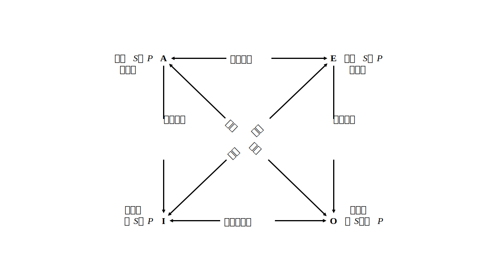
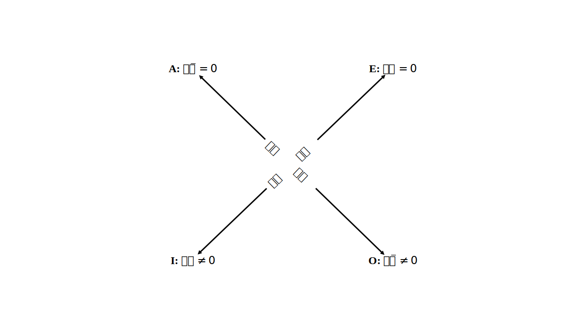
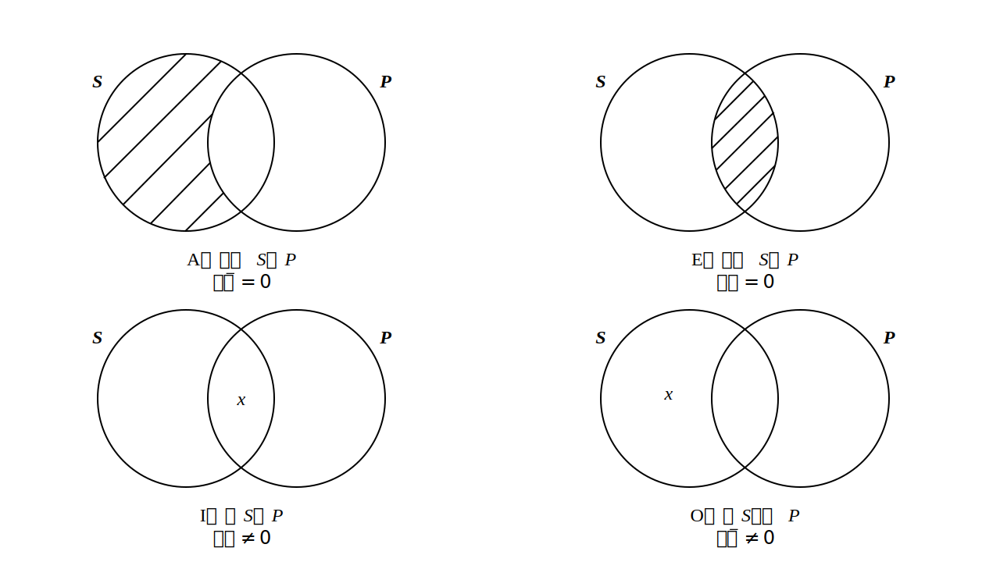
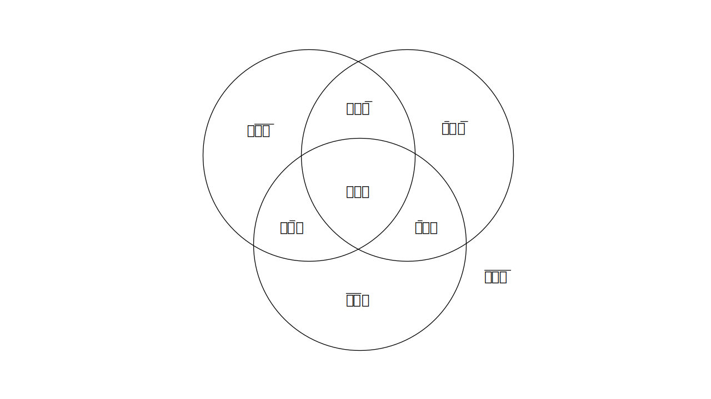
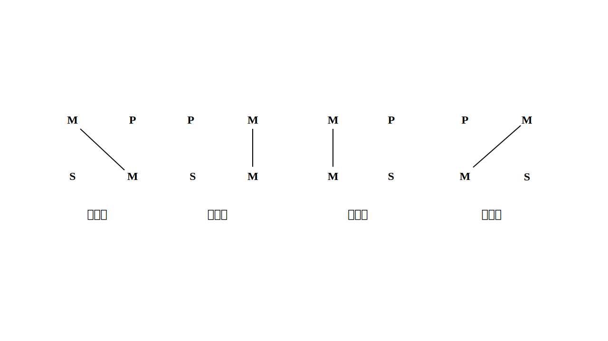
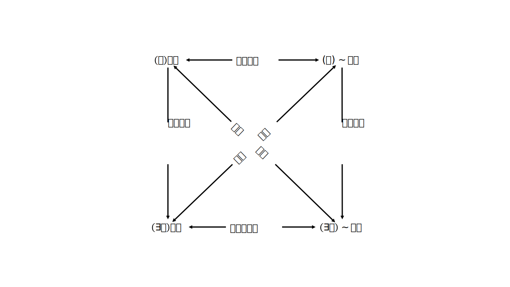
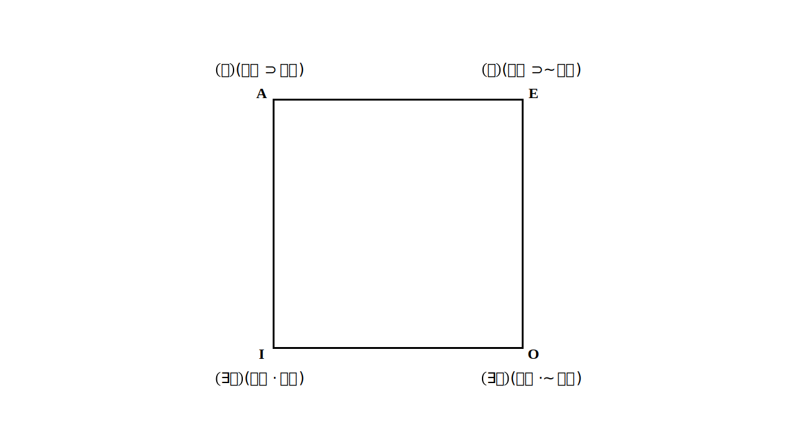

欧文·M·柯匹，卡尔·科恩：《逻辑学导论：第11版》，张建军等译，北京：中国人民大学出版社，2007。
第一部分：逻辑与语言
第1章：逻辑学的基本概念
1.1 什么是逻辑学
逻辑学是研究用于区分正确推理与不正确推理的方法和原理的学问。
逻辑学家并不关心推理的思想过程，而只关心这种过程的结果，即论证。就每一个论证都可提出如下问题：论证所得出的结论是从论证所使用的前提或假定推出的吗？论证的前提能够为接受其结论提供良好的理由吗？
在人类生活中，有些事情并不能完全用逻辑方法加以分析，有些问题并不能用论证（即使是良好的论证）来解决。但是，在那些必须依靠下判断的地方，正确推理终究是其最坚实的基础。运用逻辑学的方法与技术，人们可以有效地区分正确的推理与不正确的推理。
1.2 命题与语句
命题是一种可以被肯定或否定的东西。任一命题必是或真或假的，尽管我们可能并不知道某一特定命题究竟是真的还是假的。
要把命题与用来断定命题的语句区别开来。两个由不同语词以不同方式组成的语句，可能在同一语境中具有同样的意义，被用来表达同一个命题。命题这个术语所指谓的就是人们通常使用陈述句所断定的东西。一个特定的命题可以在许多语言中被断定。
复合命题：在一个命题中包含着别的命题。
1.3 论证、前提与结论
命题是构成论证的部件。推论：指以一个或更多命题作为出发点，得出另一命题的过程。
论证：指任一这样的命题组：一个命题从其他命题推出，后者给前者之为真提供支持或根据。一个论证的结论，就是以论证中的其他命题为根据所得出的那个命题，而这些其他命题，即被肯定（或假定）为接受结论的根据或理由的命题，则是该论证的前提。
假言命题可能看上去很像一个论证，但其并不是一个论证，两者不应混淆。（1.5节详述）
任一论证都是有结构的命题系列，但并非任一有结构的命题系列都是论证。
1.4 论证的分析
通常有两种分析技法用于论证分析。一种是解析（paraphrase），用清楚的语言和逻辑顺序表明论证中的命题；另一种是图示（diagram），用二维空间关系图展示论证的结构。
1.5 论证的辨识
A. 结论和前提指示词：
结论指示词（“所以”、“因此”、……）典型地适合引导出一个论证的结论；前提指示词（“因为”、“由于”、……）典型地适合作为论证前提的标志。
B. 语境中的论证：
结论和前提指示词但它们在实际论证中并不一定出现。论证的出现可以由话语的背景或意义来表明。上下文中命题之间相互参照，对于理解论证本身是必不可少的。
C. 非陈述形式的前提：
前提之一是反诘问句，而问题的答案被设定为明显的，这样的论证非常普遍，也很有修辞效果。通过暗示被期望的答案并且引导读者自己引出那个答案，可以增强论证的说服力。
可是这样使用问句是有风险的。如果设定为显然或确定无疑的答案事实上并非如此，那么这个论证就是有缺陷的，而其缺陷正可能被问句掩盖。人们使用设定有明显答案的问句来做论证的前提，有时就是为了回避直截了当地肯定其前提的责任，而实际上其设定的答案是含糊的甚或是假的。
有时论证的结论可以采用祈使句或命令句的形式。
D. 未明确陈述的命题：
论证中有一个或更多构成命题未明确陈述出来，但又假设能为人理解。
省略三段论所依赖的未陈述出来的命题有可能并不显然，而是可质疑的；不把它明确陈述出来，可能正是为了使之避受责难。
当论证的目的是强调某个命题的虚假性时，说话人常常构造这样一个假言命题：以该命题作前件（“如果”部分），以一个普遍认为为假的命题作后件（“那么”部分）。
1.6 论证和说明
许多语段，无论是书面语还是口语，看起来好像是论证，实际上不是论证而是说明，即使有某些前提或结论指示词出现。
表面上相似的语段可能具有完全不同的功能。任何一个特定的语段究竟是论证还是说明，这取决于那个语段所服务的目的。如果我们的目的是要确立某个命题Q的真，为此我们提出某个证据P来支持Q，我们可以恰当地说“Q因为P”。也就是说我们为Q建立一个论证，P是我们的前提。但是假设Q是已知为真的。在这种情况下我们不必提出任何理由来支持它的真——但是我们可以希望对它为什么是真的给出一个说明。这样我们也可以说“Q因为P”——但在这种情况下，我们不是为Q建立一个论证，而是给出一个对Q的说明。
1.7 演绎和有效性
论证有两大不同种类：演绎论证和归纳论证。这两类论证在其前提支持结论的方式上有着根本的不同。
任一演绎论证均断言其前提决定性地（conclusively）支持结论。相反，归纳论证均没有这种断言。
对逻辑学家而言，有效性这个术语仅仅对演绎论证才是适当的。我们可把“有效性”定义如下：一个演绎论证是有效的，即如果其前提是真的，则其结论必定是真的。
如果一个演绎论证不是有效的，它一定是无效的；如果它不是无效的，它一定是有效的。演绎逻辑的中心任务（将在本书第二部分详细讨论）就是对有效论证和无效论证做出区分。但用来判定论证有效性的传统方法不同于大多数现代逻辑学家使用的方法。前者被叫做古典逻辑，发端于亚里士多德的分析工作，本书的第5、6、7章将对此加以阐释。现代符号逻辑的方法将在本书的第8、9、10章详加介绍。
1.8 归纳和或然性
归纳论证既不是有效的也不是无效的。归纳论证的前提为它的结论提供某种支持，前提授予结论的或然性程度越高，论证的价值也就越大。新发现的事实可以使我们改变对或然性的估价，可能导致我们对归纳论证的判定比我们原想的更好（或更差）。相反，演绎论证却不能越来越好或越来越差。
归纳和演绎的区别依赖于两类论证对前提和结论之间的关系所作断言的性质。演绎论证是一种其结论被断言为从其前提绝对必然地推出的论证，这种必然性不是一个程度问题，不以任何其他事物情况为转移。反之，归纳论证是一种其结论被断言为仅仅或然性地从其前提推出的论证，这种或然性是一个程度问题，其程度受可能出现的其他事物情况的影响。
1.9 有效性和真实性
有效性指谓命题之间的一种关联——作为演绎论证前提的命题集和作为该论证的结论的一个命题之间的关联。因为归纳论证永远达不到逻辑必然，有效性永远不适用它们。有效性也永远不能适用于任何独立的单一命题本身，因为在任何一个命题内部都不可能找到这种必需的关联。
真和假是单一的命题或陈述的属性；有效性和无效性是论证的属性。即使一个论证的一个或几个前提不是真的，这个论证也可能是有效的。
真实性和有效性之间关系的七种情况：
无效的论证：
| 真结论 | 假结论 | |
|---|---|---|
| 真前提 | √ | √ |
| 假前提 | √ | √ |
有效的论证：
| 真结论 | 假结论 | |
|---|---|---|
| 真前提 | √ | |
| 假前提 | √ | √ |
第二个表格的那个空格位置显示了非常重要的一点：如果一个论证是有效的并且其前提都是真的，我们就可以断定其结论也是真的。
若一个论证有效，并且其所有前提都为真，我们就称它为“可靠的”（sound）论证。一个可靠论证的结论一定是真的。
如果一个演绎论证不是可靠的——也就是说，如果这个论证不是有效的，或者如果其前提并非都是真的——即使其结论事实上是真的，其结论的真实性在论证中也得不到确立。
1.10 复杂的论证性语段
有些语段中的论证是由几个论证多重复合而成，语段中有些命题只作为前提，有些命题既作为前提又作为分结论。图示法的技术就非常有助于分析这种语段。
即使是一些包含许多前提和分结论的语段，我们也经常发现它们是非常融贯的、清楚的。但日常生活中的论证经常达不到这样的水准。通过使一个推理过程的结构暴露出来，我们能看到推理过程是如何展开的，推理的长处与缺陷是什么。
1.11 推理
在决定自己应如何行动、评价他人的行动、为道德的或政治的信念进行辩护等方面，我们每天都要建构我们自己的论证。
推理的技能可以通过训练来提高。推理游戏、推理谜题是相当实用的。推理不仅是一项必要的活动，也是一项愉快的活动。
第1章概要
本章引进并举例解释逻辑学最基本的概念。
1.1节将逻辑学定义为研究用于区分正确推理与不正确推理的方法和原理的学问，并对这个定义作了阐释。
1.2节阐释命题概念——命题是可以被肯定或否定，并且或真或假的东西——并且对命题与表示命题的语句作了区分。
1.3节引入并阐释论证概念——一串命题，其中之一是结论，另一个（或一些）是用以支持结论的前提。
1.4节说明并且例示分析论证的方法——一种是解析法，按照逻辑的顺序完整地列出论证中所有的命题；另一种是图示法，所有命题都用数字标示，这些数字以一定的方式相互连接以展现命题之间的逻辑关系。
1.5节讨论辨识论证的几个方面的问题，包括结论指示词和前提指示词、语境在辨识前提和结论中的作用、有可能充当前提的非陈述形式以及包含未明确陈述出来的命题的论证等。
1.6节讨论论证和说明之间的区别，解释为什么做出这种区分常常是困难的，这种区分依赖于语段的语境和作者的表达意图。
1.7节讨论演绎和有效性，将演绎论证定义为断言其结论从前提必然地得出的论证，一个有效的演绎论证就是一个假如其前提为真则结论必然为真的论证。
1.8节讨论归纳和或然性，将归纳论证定义为其结论具有某种或然性程度，但并非（从前提）必然地得出的论证，说明归纳论证可以被判定好与坏，但不能刻画为有效与无效。
1.9节讨论演绎论证的有效（或无效）与命题的真（或假）之间的某些复杂关系。
1.10节讨论复杂的论证语段，表明如何使用图示技术对它们进行分析。
1.11节讨论推理问题，展示了一些能够训练与强化推理技术的方式，以及它们所提供的纯粹的智力快乐。
第2章：语言的用法
2.1 语言的三种基本功能
信息性用法（the informative）、表达性用法（the expressive）和指令性用法（the directive）。
2.2 多功能话语
语言交流的三重划分不能机械运用。成功的交流都要求一定的功能结合。
语言在某些特殊语境中还具有一些特殊用法，而这些用法并不能完好地归属这三重划分。如：礼仪性用法，践行性（performative）用法。
2.3 话语形式
语句一般被分为四种类型，即陈述句、疑问句、祈使句和感叹句。但是，这四种语法分类与陈述、询问、命令和惊叹并不完全对应。
必须将信息性功能与非信息性功能的话语区分开来；必须理顺给定语段所具有的信息性功能与其可能具有的所有其他功能之间的关系。
句子表示的命题与关于说话者的事实（句子的说出就是后者的证据）之间的区分。
认识到冒犯言语中信息性与情感性功能的融合（integration），对保护言论自由可能是极其关键的。
逻辑技术可以相当机械地运用于检验论证的有效性，但是没有一个机械技术可以识别论证的出现。
2.4 情感词汇
一个语词或短语可以既具有字面意义又具有情感影响。后者通常被称为词汇的情感意义。相同事物可以被情感色彩非常不同的词汇所指称。
2.5 一致与歧见的种类
两个人可能会在某事情是否已经实际地发生上意见相左，这种情况可称为信念歧见。他们也可能都同意已经事实上发生了一件事，因而是信念一致的；但对那件事，他们仍可以具有不同的或者甚至相反的态度，这是对这件事的感受不同，是态度歧见。由是否有信念歧见和是否有态度歧见，可以组合出两个人的四种关系。
信念歧见可以通过确认事实而得到最好的解决。解决态度歧见难以如此径情直遂，或许考虑那种引出愉快或不愉快的结论的事情若不发生将会怎样，是有益的；动机和目的也可能具有重要性；也可以大量地使用表达性语言来尝试说服方法；在凝结团体意志和取得统一态度中，修辞艺术也可能富有成效。
有时，我们难以确定一种歧见是信念的或是态度的，或者既是信念的又是态度的。是在某些情况下，一个其表面形式是关于所谓的事实问题的差别论争，实际上是一个关于态度的实质争论，当争论的东西是事物或行为的价值时尤其如此。
2.6 情感中性语言
如果把探求现实真理作为我们的目标，那么中性语言就应更受重视。当我们试图以冷静和客观的方式推论事实时，使用强烈的情感语言便是有害而无益的。
第2章概要
本章阐释语言的多种用法和形式，以及可能由于没有认识到这些复杂性而引起的错解和滥用。
2.1节区分了语言的三种基本功能：信息性功能、表达性功能和指令性功能。
2.2节展示了一个给定语段可能行使的多种功能的方式：同时行使两种甚或所有三种功能。
2.3节表明了标准语法形式的句子，即陈述句、疑问句、祈使句和感叹句，并不总是行使与其名称相关的功能。陈述句可以用做指令性的或者表达性的功能；疑问句可以具有信息性的或指令性的功能，等等。语法形式不决定语言功能。
2.4节考察了构成句子的词汇的用法，也讨论了情感语言。
2.5节区分了信念歧见与态度歧见。冲突双方可以既在事实是什么上一致也在对事实的态度上一致，或者在两方面都对立。他们可能在事实上一致，而在对事实的态度上对立。他们还可能在事实是什么上对立，但在对他们所相信的事实的态度上却－致。要解决歧见问题，了解其真正本性是极其重要的。
2.6节讨论当辩论的目的是求真时，尽可能地将负载情感的语段归约为情感中性语言的重要性。
第3章：定义
3.1 论争、言辞之争与定义
必须区分出三种不同的论争：明显的实质论争，纯粹的言辞之争，些表面上是言辞的但实际上是实质的论争。
- 在明显的实质论争中，不存在言辞歧义，争论双方的确有歧见，或是在态度上或是在信念上的歧见。
- 在纯粹言辞之争中，存在言辞歧义但根本没有实质歧见。
- 在表面上是言辞的但实际上是实质的论争中，既存在言辞歧义又有歧见论争，或在态度上或在信念上，或者是关于事实的或者是关于某些语词的运用标准的。
3.2 定义的类型和论争的解决
定义总是符号的定义，因为只有符号才需要定义来说明其意义。
我们称被定义的符号为被定义项（definicndum），用来说明被定义项的符号或符号串称为定义项（definiens）。把定义项说成就是被定义项的意义，是错误的；正确的说法是：根据定义，定义项是与被定义项具有相同意义的另一种符号或符号串。
在推理中，定义的主要用途是消除歧义。为此，我们普遍采用两种定义：规定定义（the stipulative）与词典定义（the lexical）。
1. 规定定义：
引进新符号的人具有规定给予它什么意义的完全自由；这种定义源于随意的一个意义指派（assignment），被恰当地称做规定定义。规定定义应当被视为运用被定义项去意指定义项所意味的东西的一个建议或方案，或者被视做那样做的一个请求或指令。在这种意义下，规定定义就是指令性的而不是信息性的。
2. 词典定义：
如果下定义的目的是为了消除歧义或增加个人的词汇，而被定义项并不是新词而是已具有固定的用法，那么这种定义就是词典定义，它不能给予其被定义项一个迄今还没有的意义，而是报告其已经具有的意义。
3. 精确定义：
规定定义和词典定义都是用来消除歧义的，而精确定义则是用来减少模糊性的。
4. 理论定义：
语词的理论定义，就是试图给出词项所适用对象的一种理论上充分或者科学上有用的精确描述的定义。
5. 说服定义：
定义可能被精确构造出来并用来说服他人，即通过影响读者或听者的态度或者激发他们的情感以解决争论，我们将之称为说服定义。
情感色彩可以被偷偷地注入一个定义语言里，而这个定义却是伪称准确并表面上显得客观的。我们也必须警惕被说服定义所愚弄。
3.3 外延和内涵
在第一种含义上，词项的意义是由它适用的那些对象而构成的，“意义”的这种含义被称做词项的外延意义。普遍词项或曰类词项指谓其可以正确适用的那些对象。一个普遍词项可以正确适用的对象的汇集构成那个词项的外延。
在第二种含义，“意义”设定了决定任一对象是否属于那个词项外延的某种标准，“意义”的这种含义被称做词项的内涵意义。普遍词项指谓的所有对象并且仅仅那些对象共同拥有的属性集，称做那个词项的内涵。
每个普遍或类词项都既有一个内涵意义又有一个外延意义。词项的外延由它的内涵决定，但是反过来说却不对。词项可以具有不同的内涵但外延却相同，而具有不同外延的词项却不可能有同样的内涵。
当给一个词项的内涵添加性质时，我们就说该内涵增加了。一条公式化的“反变规律”：断言外延与内涵总是反向变化。这种断言具有启发性，但并不完全正确。正确的修订“规律”是：如果词项按照内涵增加的次序排列，那么它们的外延将处于非递增的次序。。
有些词项的外延可能是空的。认识到这一点，并运用我们对内涵与外延的区分，就可以把玩弄“意义”歧义的谬误论证揭露出来。
在前面的几节中，我们考察了定义的种类和它们的用途；在随后的几节中，我们将考察构建定义的方法。
3.4 外延定义
外延定义就是指被定义的普遍词项所适用对象的汇集。
外延定义通常要限定于所指谓对象的部分列举，这是个引起严重困难的局限。
通过子类来定义，有时可能做到完全的列举。然而，通过列举定义，无论完全列举还是部分列举，无论是列举类的个体元素还是列举子类，虽然都具有某些心理上的用处，但是要完全确定被定义项的意义，在逻辑上都是不充分的。
用列举法下定义的一个特殊类型被称做“实指定义”或“示范定义”。实指定义是通过用手或其他姿势指着对象来定义，不是通过命名或描述被定义词项指谓的对象来定义。实指定义的歧义有时可以通过给定义项增加一些描绘的短语而得到解决，其结果被称做准实指定义。
显然，内涵对定义来说是真正的关键所在。
3.5 内涵定义
三种不同含义的内涵：主观内涵、客观内涵和规约内涵。
对说话者来说，词的主观内涵就是他认为该词指谓对象所具有的属性集。
客观内涵是词项外延的所有对象共同拥有的属性全集。大多数词项的指谓对象所共同拥有的全部属性，就要求完完全全的全知，而由于没有人能够具有这样的全知，所以客观内涵就不是我们所追求的公共意义的解释。
通过非正式的承诺，我们建立了普遍词项的规约内涵。就定义之目的而言，这是内涵的最为重要的含义，因为它既是公共的，也不为使用它而要求全知。实际上，“内涵”这个词通常就是用来指“规约内涵”的。
识别词的规约内涵，最简单且最常用的方法（但功能有限）就是提供另一个意义已经被理解的词，而且它与被定义的词具有相同的意义。
词项的操作定义就是指这个词项被正确地运用到某个给定场合，当且仅当在那个场合中，特有的操作行为会产生特有结果。
我们通常可以使用“属加种差定义”来解释一个词项的规约内涵。这种方法也被称做“划分定义”、“分析定义”、“属种定义”，或者直接称做“内涵定义”。这种方法确实比任何其他方法都有更广泛的可应用性。
被分为子类的类是属，而各种各样的子类都是种。通过属加种差来定义一个词项要经过两步：首先，必须找出一个属，即包括被定义的那个种的较大的类；接着必须找出种差，即将被定义的那个种的元素与那个属的其他所有种的元素区分开来的性质。
五种定义：规定定义、词项定义、精确定义、理论定义、说服定义。
定义词项的六种方法：外延方法（示例定义、实指定义、准实指定义），内涵方法（同义定义、操作定义、属加种差定义）。
3.6 属加种差定义的规则
规则1：定义应当揭示种的本质属性。
规则2：定义不能循环。这条规则常常被理解为禁止使用同义词，也禁止使用反义词。
规则3：定义既不能过宽又不能过窄。
规则4：定义不能用歧义的、晦涩的或比喻的语言来表述。
规则5：定义在可以用肯定的地方就不应当用否定定义。
就大多数目的来说，内涵定义在很大程度上优于外延定义；而就推理或语言的其他信息性用法而言，在内涵定义中，属加种差定义通常最有效力也最有助益。
第3章概要
解释词项的意义就是给出它的定义。在本章中，我们讨论了几种定义及其用法，以及构建定义的方法和运用这些方法的规则。
3.1节解释了三种论争：
- 明显的实质争论，其中没有语词歧义，而且论争双方的确在态度上或信念上对立。
- 纯粹言辞之争，其中出现语词歧义，但根本没有实质歧见。
- 表面上是言辞的但实际上是实质的论争，其中既存在语词歧义，也存在论争双方在态度上或在信念上的歧见。
3.2节首先解释了定义总是符号的定义，并且引进了术语被定义项（被定义的符号）和定义项（用来解释被定义项意义的符号）。还在五种定义及其基本用法中进行了区分：
- 规定定义，把一个意义指派给某个符号。规定定义不是报道，因而既不真也不假；它是运用被定义项来意指定义项指谓事物的建议、解决、请求或工具。
- 词典定义，它报道被定义项已经具有的意义，因而它可以或对或错。
- 精确定义，它超出了平常用法，用于消除与临界状况有关的麻烦的不确定性。其被定义项有一个现存的意义，但这个意义是模糊的；增添什么可以达至精确性，部分上是个规定问题。
- 理论定义，它寻求对它的适用对象精确表述一个理论上足够或科学上有用的描述。
- 说服定义，它运用表达性语言而不是信息性语言来寻求影响态度或激发情感。
在这五种定义中，前两种（规定定义和词典定义）主要用于消除歧义；第三种（精确定义）主要用千降低模糊性；第四种（理论定义）用于促进理论理解；而第五种（说服定义）用于影响行为。
3.3 节解释了普遍词项指谓其可以正确适用的多个对象。这些对象的汇集构成该词项的外延。说明了为词项外延中的所有对象并且仅为那些对象所共有的属性集就是该词项的内涵。词项的内涵决定其外延，但外延却不能决定内涵；因此，几个词项可以具有不同内涵而外延却相同1 但外延不同的词项却不可能具有相同内涵。
3.4 节解释了怎样利用普遍词项的外延来构造外延定义；外延定义有几种类型，其局限性也被揭示出来：
- 列举定义，即在定义中列出或给出词项指谓对象的范例。
- 实指定义，在定义时，我们用手指出或以姿势标明被定义项的外延。
- 准实指定义，在定义中，姿势或手指的指示伴有一些其意义被认为是已为人所知的描述短语。
3.5 节解释了怎样利用普遍词项的内涵来构建内涵定义；内涵定义也有几种类型，其局限性也被揭示出来：
- 同义定义，在定义中提供另一个其意义已为人所知的词，这个词与被定义的词具有相同意义。
- 操作定义，它表明词项正确运用于一个给定场合，当且仅当，在该场合下特有的操作行为产生特有结果。
- 属加种差定义，首先要找出一个属，被定义项所指代的种是该属的一个子类；然后找出属性（或种差），即把该种的分子与属的所有其他种的分子区分开来的那种属性。
内涵定义的方法可以用于构建3.2节中五种定义的任何一种：规定定义、词典定义、精确定义、理论定义和说服定义。
3.6 节明确表述和解释了传统的属加种差定义的五条规则：
- 定义应当揭示种的本质属性。
- 定义不能循环。
- 定义既不能过宽又不能过窄。
- 定义不能用歧义的、晦涩的或比喻的语言来表述。
- 定义在可以用肯定的地方就不应当用否定定义。
第4章：谬误
4.1 什么是谬误？
一个论证的前提不支持它的结论，即使它的所有前提都是真的，它的结论也可能是假的。在这种情况下，其推理便是糟糕的，而这种论证就称为谬误。谬误就是推理错误。
然而，逻辑学家所用的“谬误”这个词，并不指称所有过失推理或虚假信念，而是指称一种典型错误，即经常出现在日常话语中破坏论证的错误。我们将谬误定义为一种看似正确但经过检验可证其为错误的论证类型。
我们挑出17种谬误，即推理中最普通且最有欺骗性的错误，分成三大组，分别称为：相干谬误（fallacy of relevance）、预设谬误（fallacy of presumption）、含混谬误（fallacy of ambiguity）。
4.2 相干谬误
当一个论证所依据的前提与其结论不相干因而不可能确立结论之真时，其所犯的就是相干谬误。
R1. 诉诸无知论证（The Argument from Ignorance: Argument Ad lgnorantiam）：诉诸或源于无知的论证犯的是这样的错误，它辩称一个命题是真的，其依据仅仅是该命题并没有被证明为假，或者辩称一个命题是假的，仅仅因为并没有证明其为真。
R2. 诉诸不当权威（The Appeal to Inappropriate Authority: Argument Ad Verecundiam）：当诉诸的对象对所讨论问题不能合理地宣称权威时，就会产生诉诸权威谬误。决定谁的权威真正值得依赖往往是个难题。诉诸不当权威论证就是诉诸这样的人，他无权声称比我们自身有更大能力来判断命题p的真。当然，即使一个人的确具有合法声称的权威，也很可能会被证明出错，而我们以后可能后悔我们对专家的选择。但是，如果我们选择的专家无愧于对事物情况如p（无论p可能是什么）的知识名声，那么依赖他们并没有谬误，即使他们是错误的。如果我们的结论以权威意见为基础，但该意见在那个问题上不能合理声称是专门知识，那么我们的错误就是一种推理错误即谬误。
R3. 人身攻击论证（Argument Ad Hominem）：一种谬误性反驳，即它的抨击不是指向结论，而是指向断定结论或为结论辩护的人。
- 诽谤：贬低对手的品格，否认他们的智力或推理能力，质疑他们的正直，等等。但是，个人的品格与他主张的命题的真假或推理的正误在逻辑上并无关联。
- 背景谬误：引起背景谬误的是，在本不相干的信念与该信念持有者的背景之间加以牵连。人们做出或拒绝某个主张的背景并不承载该主张为真。
背景谬误可以被看做诽谤谬误的一种特殊情况。
R4. 诉诸情感（The Appeal to Emotion: Argument Ad Populum）：用表达性语言和其他有计划的手段以博取情感，激起兴奋、愤怒或憎恨，而不是致力于提出证据和合理论证。
R5. 诉诸同情（The Appeal to Pity: Argument Ad Misericordiam）：可以看做是诉诸情感的一种特殊情况，其中听众的利他主义和怜悯之心是其所诉诸的特殊情感。
R6. 诉诸暴力（The Appeal to Force: Argument Ad Baculum）。
R7. 不相干结论（Irrelevant Conclusion: Ignoratio Elenchi）：当一个论证声称要确证一个特定的结论，但却去证明另一个与之不同的结论时，就犯有不相干结论谬误。
4.3 预设谬误
有些错误产生于不正当假设，这种错误常常可以通过论证的精确表述而显示出来。这类无根据的跳跃就被称为预设谬误。在这类论证谬误中，前提也常常与结论不相干，但预设谬误展示出一种特殊的错误：那种不为人支持甚至是不可支持的暗含假定。
P1. 复杂问语（Complex Question）：以预设掩藏在问句中的某些论断为真的方式来问问题。当一个问语是复杂的，而且掩藏着多个预设时，就必须对它们逐个地进行否定。仅仅否定一个预设可能会导致对其他假定的肯定。
P2. 虚假原因（False Cause）：设定一个并不真实存在的因果联系，即“无因之因”（non causa pro causa）的谬误。有时人们假定一事件是另一事件的原因，只因为另一事件在时间上紧随着前者。我们当然知道，纯粹的时间连续并不能确证一种因果联系，但是很容易被欺骗。
P3. 丐题（Begging the Question: Petitio Principii）：在证明论题的努力中，却又假定了所要寻求证明的论题。
P4. 和P5. 偶然和逆偶然（ident and Converse Accident）：当我们把一个概括运用于个别事例中而该事例并不适于这种运用时，我们就犯了偶然谬误。反之，当我们无心或故意地把对一个特殊事例为真的东西直接看做对大量事例为真，我们就犯了逆偶然谬误。在中文文献中，这两种谬误亦称为“以全赅偏”和“以偏赅全”。
4.4 含混谬误
一个词项在前提中可能具有一种意义，但是在结论中却是另一种相当不同的意义。当推论依赖这样的变化时，称做“含混谬误”。
A1. 歧义：当人们有意无意地混淆一个词或短语的几个意义时，就是在歧义地使用这个词或短语。如果在论证中这样做，就犯了歧义谬误。
A2. 双关：一个陈述是双关的，是指由于它的词汇组合松散或笨拙导致它的意义不确定。一个双关陈述可能在一种解释下可能是真的，而在另一种解释下却是假的。当以使其为真的解释来表述论证前提，而以使其为假的解释得出结论时，那么就犯了双关谬误。
A3. 重读：若前提的明显意义依赖于一个可能的强调，但是，得出的结论却依赖于对相同词汇不同的重读意义，这时就犯了重读（accent）谬误。
A4. 合成：第一类合成谬误可以描述为：从作为整体之部分的性质得到整体本身性质的推理。另一种合成谬误与第一种是严格平行的谬误，这种合成谬误是从一个汇集的单个元素或分子的性质得到该汇集总体或元素全部的性质的推理，第二种合成谬误可以定义为“这样的无效推论：对一个词项的分布式（distributive）断言是真的，因而该词项的汇集式（collective）断言也是真的”。
A5. 分解：第一种分解谬误断言对一个整体为真的东西一定对它的部分也真。第二种分解谬误是从元素的汇集性质而得出元素自身的性质。
第4章概要
在本章中，我们看到，谬误是那种看起来正确但经过考察而证明并非如此的论证。我们对常见的欺骗性推理错误类型给出了传统名称，区分出三大类非形式谬误：相干谬误、预设谬误和含混谬误。
相干谬误：
在这类谬误中，错误论证依赖于看起来可能与结论相关但事实上无关的前提。我们分七种相干谬误来解释这类推理错误。
R1. 诉诸无知论证：当以一命题没有被证明是假的为理由来论证该命题是真的，或当论证一命题是假的因为它没有被证明是真的。
R2. 诉诸不当权威：一个论证的前提诉诸某方或多方判断，而它或它们却不能合法地声称对手头问题具有权威。
R3. 人身攻击论证：攻击不是针对所做的主张或针对论证的优点，而是针对对手本身。
人身攻击论证有两种形式：当攻击直接针对人，以寻求坻毁和侮辱他们时，就称做“诽谤性人身攻击论证”。当攻击间接地对准人，暗示他们坚持他们的观点主要是因为他们的特殊环境或利益时，就称做“背景性人身攻击论证”。
R4. 诉诸情感：细心推理被激起狂热或情感来支持预先结论的精心策划所取代。
R5. 诉诸同情：细心推理被激起听者同情来达到说者所关注目标的稍心策划所取代。
R6. 诉诸武力：为了得到对某些结论的承诺，细心推理被直接或含沙射影的威胁所取代。
R7. 不相干结论： 前提不得要领，声称支持一个结论而事实上却支持或证实另一个结论。
预设谬误：
在这类谬误中，错误论证源于依赖于某些被假定为真的命题，而这些命题实际上是假的、可疑的或没有得到证明的。我们分五种预设谬误来解释这类推理错误。
P1. 复杂问语：以问句预设了某些假设为真的方式来询问问题。
P2. 虚假原因：把一个东西当做一个事物的原因而它实际上并不是那个事物的原因，或更一般地说，在以因果关系为基础的推理中犯错。
P3. 丐题：在某个论证前提中假定了结论要寻求确证的东西。
P4. 偶然：把某个概括运用于它不能适当管辖的个别情况。
P5. 逆偶然：粗心大意地从单个情况转移到一个无辩护余地的广泛概括。
含混谬误：
在这类谬误中，错误论证的形成方式是，它依赖于词或短语从在前提中的用法到在结论中的用法的意义变化。我们分五种含混谬误来解释这类推理错误。
A1. 歧义：在论证的明确表述中，有意或无意地使用同一个词或短语的两个或更多意义。
A2. 双关：因为陈述中的词或短语结合得松散或笨拙，论证中的这个陈述具有多于一个合理意义。
A3. 重读：意义的变化作为对论证的词或短语的强调改变的结果而源千该论证之内。
A4. 合成：（a）错误地从部分性质到整体性质进行推理，（b）或者，错误地从某汇集的个别分子性质到整个汇集的性质进行推理。
A5. 分解：（a）错误地从整体性质到它的一个部分的性质进行推理，（b）或者，错误地从某些实体汇集的某个全体性质到该汇集的个别实体性质进行推理。
第二部分：演绎
第5章：直言命题
5.1 演绎理论
演绎论证是这样一种论证，其前提被要求为结论的真提供决定性基础。
演绎理论旨在阐明有效论证的前提与结论之间的关系，为评估演绎论证提供方法。
5.2 直言命题及其类别
直言命题肯定或否定某个类S全部或部分地包含于另一个类P之中。
- 如果一个类的所有元素（member）都是另一个类的元素，例如狗的类与哺乳动物的类，则称第一个类包含于（be included）或包括在（becontained）第二个类之中；
- 如果一个类中有元素是另一个类的元素，但并非其所有元素都是另一个类的元素，例如女人的类和运动员的类，则称第一个类部分地包含于第二个类之中；
- 如果两个类没有共同的元素，例如三角形的类和圆形的类，则称这两个类之间是相互排斥（exclude）的。
类与类之间的这些关系被直言命题所肯定或否定，其结果是恰好能形成直言命题的四种标准形式：
- 全称肯定命题（A命题）断言第一个类中所有元素都是第二个类的元素：所有S是P。
- 全称否定命题（E命题）断言第一个类与第二个类是完全排斥的，也就是说第一个类中没有元素是第二个类的元素：没有S是P。
- 特称肯定命题（I命题）断言的是主项S指称的类中至少有一个元素是谓项P指称的类的元素：有S是P。
- 特称否定命题（O命题）断言的是主项S指称的类中至少有一个元素被谓项P指称的类的全体所排斥：有S不是P。
5.3 质、量与周延性
A. 质：
每个标准式直言命题或是肯定的或是否定的，这叫做命题的质。如果一个命题肯定了类与类间的包含于关系，不管是全部地还是部分地肯定，那么，它的质就是肯定的。如果一个命题否定类与类间的包含关系，不管是全部地还是部分地否定，那么，它的质就是否定的。
B. 量：
每个标准式直言命题或是全称的或是特称的，这称为直言命题的量。如果一个命题述及主项所指称的类的所有元素，那么，它的量就是全称的。如果一个命题只述及主项所指称的类的某些元素，那么，它的量就是特称的。
C. 标准式直言命题的一般模式：
引入“周延”这个技术性术语，刻画出现于直言命题中的主谓项的性质。如果一个命题述及了某个词项所指称的类的全部元素，则称该词项在这个命题中是周延的。
- A命题（全称肯定命题）的主项（在命题中）是周延的，而谓项（在命题中）是不周延的。
- E命题（全称否定命题）的主项周延，谓项也周延。
- A命题（特称肯定命题）的主项、谓项都是不周延的。
- O命题（特称否定命题）的谓项是周延的，但主项不周延。
总结：
| 谓项不周延 | 谓项周延 | |
|---|---|---|
| 主项周延 | A：所有S是P | E：没有S是P |
| 主项不周延 | I：有S是P | I：有S不是P |
5.4 传统对当方阵
具有相同主项和相同谓项的标准式直言命题，可能在量上有所不同，或者在质上有所不同，也可能在质与董上都不同。先前的逻辑学家称之为对当关系（opposition），各种对当关系之间有很重要的真值联系。
A. 矛盾关系（Contradictories）：
两个命题之间具有矛盾关系，如果一个是另一个的拒斥（denial）或否定（negation），也就是说，它们既不能同真也不能同假。
A和O互为矛盾，E和I互为矛盾。
B. 反对关系（Contraries）：
两个命题之间具有反对关系，如果它们不能同时为真，也就是说，可以由一个的真推出另一个的假。
互相反对的命题可以同假。如果A命题或者E命题是必然真的——即在逻辑上或数学上为真那么，说它们是互相反对的就是不正确的。我们把既非必然真也非必然假的命题称为偶真的（contingent）。如果一个A命题和一个E命题都是偶真的，并且它们有相同的主项和相同的谓项，那么，说它们是反对的就是正确的。
C. 下反对关系（Subcontraries）：
两个命题之间具有下反对关系，如果它们不能同假，但可以同真。
如果I和O必然为假，那么，说它们是下反对的就不正确。当然，如果I和O都是偶真的，就可以同真。
D. 差等关系（Subalternation）：
如果两个命题有相同的主项和相同的谓项，并且它们的质相同（即都是肯定的或者都是否定的），但量不同（即一个为全称，另一个为特称），那么，它们之间的关系就是差等关系。全称命题与相应的特称命题之间的对当关系叫做差等关系。传统上认为，在差等关系中，上位的真蕴涵下位的真。
E. 对当方阵：
对当方阵：

任何论证都是从一个或多个前提得出一个结论。包括一个以上前提的推论叫做间接推论；如果从唯一的前提出发，不经过任何中介推得结论，这样的推论叫做直接推论。
基于对当方阵的直接推论：
- 如果A真，那么，E假、I真、O假；
- 如果E真，那么，A假、I假、O真；
- 如果I真，那么，E假，A、O真假不定；
- 如果O真，那么，A假，E、I真假不定；
- 如果A假，那么，0真，E、I真假不定；
- 如果E假，那么，I真，A、O真假不定；
- 如果I假，那么，A假、E真、O真；
- 如果O假，那么，A真、E假、I真。
5.5 其他直接推论
A. 换位法（Conversion）：
换位法是一种仅仅通过交换命题中主、谓项的位置而进行的推论。一个标准式直言命题叫做另一个的换位命题，如果它是通过交换另一个命题的主、谓项的位置而得到的。换位法直接推论中的前提叫做被换位命题（convertend），结论叫做换位命题（converse）。
因此，通过差等关系和换位法的结合，从所有S都是P就可有效地推出有P是S 。这种推论称为限制换位（或“偶然换位”），即交换主谓项的位置，同时将命题的量由全称改为特称。作为限制换位结论的换位命题与原来的A命题并不等价。但E命题的换位命题仍是一个E命题，I命题的换位命题仍是一个I命题，在这样的情况下，被换位命题与换位命题有同样的量，并且在逻辑上是等价的。O命题的换位一般是无效的。
有效换位表：
| 被换位命题 | 换位命题 |
|---|---|
| A：所有S是P | I：有P是S（限制换位） |
| E：没有S是P | E：没有P是S |
| I：有S是P | I：有P是S |
| O：有S不是P | （换位无效） |
B. 换质法（Obversion）：
一个类就是具有某种共同属性的所有对象的汇集。这种共同属性叫做“类的定义特征”。所有的类都有一个相应的补类（complementary class）、或简称补（complement），即不属于原来的类的所有东西的汇集。词项S所指称的类的补则由词项非S指称，因而可以说词项非S就是词项S的补。
对一个命题进行换质，就是改变其质，并用谓项的补替换原来的谓项。换质法应用到任何标准式直言命题，都是有效的直接推论。换质法直接推论中的前提叫做被换质命题（obvertend），结论叫做换质命题（obverse）。
换质表：
| 被换质命题 | 换质命题 |
|---|---|
| A：所有S是P | E：没有S是非P |
| E：没有S是P | A：所有S是非P |
| I：有S是P | O：有S不是非P |
| O：有S不是P | I：有S是非P |
C. 换质位法（Contraposition）：
对给定的命题进行换质位，就是将主项换为原命题谓项的补，并将其谓项换为原命题主项的补。
一般说来，A命题不能有效地换位，除非进行限制换位。于是，通过限制换位得“有非P是S”，再换质得“有非P不是非S”，我们称之为“限制换质位”。通过限制性换质位法，我们可从一个E命题推得一个O命题。换质位法只对A 命题和O命题是有效的，对I命题是无效的，对E命题进行限制换质位才是有效的。
换质位表：
| 前提 | 完全换质位命题 |
|---|---|
| A：所有S是P | A：所有非P是非S |
| E：没有S是P | O：有非P不是非S（限制） |
| I：有S是P | （换质位无效） |
| O：有S不是P | O：有非P不是非S |
若要解决关于命题之间关系的某些问题，最好的方法就是研究从其中一个可以推得另一个的各种直接推论。
5.6 存在含义与直言命题的解释
有些命题有存在含义（existential import），有些则没有。如果说出一个命题就肯定了某种对象的存在，那么就说这个命题有存在含义。
特称命题I和O，一般说来，确实断定了主项指称的类不为空。但这种状况的后果令人不安：通过差等关系推论，I命题可以从相应的A命题有效地推出，O命题可以有效地从E命题推得，但如果I和O命题有存在含义，而它们分别是从A和E命题得到的，那么A和E命题必定也要有存在含义。因为一个有存在含义的命题不可能有效地从另一个没有同样含义的命题得到。这种结果造成了一个严重的问题：两个矛盾命题可能同时为假。而如果两者都是假的，它们就不可能是矛盾关系！
由此看来，传统对当方阵有不妥之处：假如它所说A和E命题有效地蕴涵相应的I和O命题是正确的话，那么，它断言A和O命题之间有矛盾关系就不正确了，同样，认为I和O命题为下反对关系也是不正确的。我们可以引入预设（presupposition）概念来恢复逻辑方阵的地位。为挽救传统逻辑方阵，我们可以主张所有直言命题，即四种标准式命题A、E、I、O都预设（在上述含义下）它们涉及的类均不为空，即都有元素。
存在预设对于挽救亚里士多德型逻辑既是必要的也是充分的。而且，预设在很多情况下与现代语言的日常用法是一致的。然而不幸的是，用来挽救逻辑方阵的这种全面预设却要付出一个过重的代价，是我们不能接受的：
- 首先，引入预设付出了不能刻画某些我们需要的断言的代价，即不能再刻画那些否定有元素存在的命题了，而这样的否定有时非常重要；
- 其次，即使是日常语言的用法，也并不完全与全面存在预设一致，有时我们说的话并不假定所谈的类中有元素。
- 再次，在科学界及其他理论界，我们通常希望进行没有任何存在预设的推理。
直言命题的现代解释不再假定我们言说的类中必定有元素。拒绝这种假定的解释称为布尔解释。
- 在某些方面，传统解释仍然成立。I和O命题在布尔解释中仍然有存在含义。如果S类为空，那么命题“有S是P”为假，命题“有S不是P”也为假。
- 全称命题A和E与特称命题O和I之间的矛盾关系也保持为真。
- 在布尔解释中上述关系是完全融贯的，这是因为，全称命题被解释为没有存在含义。即使S类为空，命题“所有S是P”仍可以为真，“没有S是P”也可以为真。
- 在日常话语中，有时我们说出一个全称命题，确实假定了某事物的存在。当然，布尔解释也允许有这种表述，但要求用两个命题来表述，一个是有存在含义的特称命题，加之一个没有存在含义的全称命题。
- 采纳布尔解释会带来一些重要变化。相应的A、E命题可以同真，因此它们之间不再是反对关系。
- 类似的，在布尔解释中，因为I和O命题确实有存在含义，所以，如果主项指称的类为空，相应的I和O命题都是假的，因此相应的I和O命题之间也不再是下反对关系。
- 在布尔解释中，差等关系——从A命题推出相应的I命题，从E命题推出相应的O命题——不是普遍有效的。从一个没有存在含义的命题当然不能得出一个有存在含义的命题。
- 布尔解释保留了一些直接推理：E命理和I命题的换位推理，A命题和O命题的换质位推理，所有命题的换质推理。但限制换位、限制换质位推理不再有效。
- 在布尔解释下，逻辑方阵转变为如下情形：方阵周边的关系不再成立，而对角线上的矛盾关系保持不变。
现代逻辑学家否定了全面存在预设。对于一个不能明确断定其中有元素的类，我们就不能假定它有元素，否则就是错的。任何依据这种错误假定的论证都会产生存在预设谬误，简称为存在谬误。
5.7 直言命题的符号系统与图解
A命题：$S\bar{P}=0$；O命题：$S\bar{P}\neq 0$；E命题：$SP =0$；I命题：$SP \neq 0$。
布尔解释下的对当方阵：

用文恩图（Venn diagram）表示命题：

第5章概要
本章介绍并讨论的是古典逻辑即亚里士多德型逻辑的基本构件，也是演绎逻辑的基本构件。
5.2节介绍类的概念。传统逻辑正是以类为基础建立起来的。我们阐明了四种基本的标准式直言命题。
- A命题：全称肯定命题
- E命题：全称否定命题
- I命题：特称肯定命题
- O命题：特称否定命题
5.3 节更加详细地考察这四种命题。探讨了命题的质，即肯定和否定，以及命题的量，即全称和特称。说明了周延的项与不周延的项。
5.4 节探讨这几种直言命题之间的对当关系的种类：命题之间的矛盾关系、反对关系、下反对关系以及上位式与下位式之间的差等关系。并用一个对当方阵图示了这几种关系，进而说明了一些基于传统方阵的直接推理。
5.5 节阐明其他三种宜接推论：换位法、换质法和换质位法。
5.6 节探讨存在含义问题。要保留传统对当方阵，只有做出一种假定，即全盘假定命题主项所指称的类总是有元素的——这是现代逻辑极不赞同的。然后，我们又对本书通篇采用的布尔解释作了说明。布尔解释能保留传统逻辑对当方阵中的大部分内容，同时又避免了非空类的假定。在布尔解释中，特称命题，即称为I和O的命题之中有存在含义，但全称命题，即A和E则没有存在含义。我们也很细致地说明了采用这种解释的结果。
5.7 节介绍将直言命题符号化与图示化的方法、包括使用文恩图，用交叉的圆加以恰当的标记或阴影来刻画类与类之间的关系。
有了这些必要的工具，我们就可以考察——在接下来的两章中——建基于标准式直言命题之上的三段论，以及传统演绎逻辑在日常语言中的其他主要用途。
第6章：直言三段论
6.1 标准式直言三段论
三段论是从两个前提推得一个结论的演绎论证。直言三段论是由三个直言命题组成的演绎论证，其中包含且仅包含三个词项，每个词项在其构成命题中恰好出现两次。
如果一个直言三段论的前提、结论都是标准式的直言命题（A、E、I、O），并且以特定的标准顺序组合在一起，就称为标准式直言三段论。
A. 大项、小项和中项：
结论的谓项称为三段论的大项。
结论的主项称为三段论的小项。
在结论中不出现，而在前提中出现两次的项，即三段论的第三个项，称为中项。
包含大项的前提称为大前提，包含小项的前提称为小前提。
在标准式三段论中，大前提处在第一位，小前提处在第二位，结论在最后。
B. 式：
每个三段论的式都由三个按特定顺序排列的字母组成。第一个字母指的是大前提的类型，第二个字母指的是小前提的类型，第三个字母指的是结论的类型。
C. 格：
我们可以通过陈述一个三段论的格和式来完整地描述其形式，它的格表明了中项在前提中的位置。中项的可能组合分别构成了三段论的第一、第二、第三和第四格。
| 第一格 | 第二格 | 笫三格 | 第四格 |
|---|---|---|---|
| M-P | P-M | M-P | P-M |
| S-M | S-M | M-S | M-S |
| ∴S-P | ∴S-P | ∴S-P | ∴S-P |
要完整地描述一个标准三段论的形式，只要指明其式和格即可。标准式的三段论呈现出256 个不同的形式，但其中只有少数形式是有效的。
6.2：三段论论证的形式性质
三段论的形式由格与式唯一确定，三段论的有效性与无效性（其构成命题都是偶真的）仅仅依赖于形式，而完全独立于具体内容和题材。
逻辑类推：揭示一个三段论荒谬性的最好方式，是构造一个形式相同但其无效性可直接显示出来的论证，即其前提明显为真但结论明显为假。这种逻辑类推法的根据是：直言三段论的有效性或无效性是纯形式问题。
6.3 检验三段论：文恩图解法

使用文恩图检验标准式三段论的一般做法可以总结如下：首先，在三圆的文恩图上标记三段论的三个项。接下来，把两个前提在图中都表示出来，如果一个前提是全称、另一个是特称的话，要首先标明全称前提。特别注意，如果特称前提并没有明确表明应该把x加在哪一部分时，就把x放在两个部分的交叉线上。最后，检查图示中是否已经包含了结论：如果包含了，那么三段论就是有效的，否则就是无效的。
6.4 三段论规则和三段论谬误
规则1：避免四项：
一个有效的标准式直言三段论必须仅仅包含三个项，在整个论证中，每一个项都须在相同的意义上使用。如果包含了多于三个的项，三段论就是无效的。这种谬误叫做四项谬误。
规则2：中项至少在一个前提中周延：
如果（如5.3节所说明）命题述及一个项所指称的全部对象，该项在命题中就是“周延”的。如果中项在两个前提中都不周延，推出结论所需要的词项关联就不能建立。这样的谬误叫做中项不周延谬误。
规则3：在结论中周延的项在前提中也必须周延：
述及一个类的全部对象，比述及其中某些对象要断定更多。所以，如果三段论前提中不周延的项在结论中周延，也就是结论断定了比前提更多的东西。但是，有效的论证要求其前提必须能逻辑地推出结论，结论绝不能比前提断定得更多。可以说，在结论中周延而在前提中不周延的项确实是个信号，说明结论超出了前提，跑得太远了。这种谬误叫做不当周延。
不当周延有两种不同形式：大项不当周延（“非法大项”）、小项不当周延（“非法小项”）。
规则4：避免出现两个否定前提：
任何否定命题（E或O）都否认类的包含关系，断定一个类的部分或者全部被排除在另一类的全体之外。但是，由两个断定这种排斥性的前提不能得出结论中的联系，因此，不可能是有效的论证。这种错误叫做排斥前提谬误。
规则5：如果有一个前提是否定的，那么结论必须是否定的：
如果结论是肯定的，也就是说，如果它断言两个类中的一个（S或P）完全或部分地包含在另一个之中，那么，前提必须断定这样的第三个类存在才能推出结论，即第三个类必须包含第一个并且被第二个包含，而类之间的这种包含关系只能由肯定命题表示。所以，肯定的结论只能由两个肯定的前提得到。违反这条规则的错误叫做从否定推肯定谬误。
与其他谬误不同，这个谬误并不常见，因为对于任何从否定前提得肯定结论的论证，很容易就可以看出是极不合理的。
规则6：两个全称前提得不出特称结论：
在直言三段论的布尔解释中（见5.6节），全称命题（A和E）没有存在含义，但特称命题（I和O）却有存在含义。只要像本书这样设定了布尔解释，就要避免从没有存在含义的前提得出有存在含义的结论。
如果一个论证的前提根本没有断定什么东西存在，但是从这些前提却推出了有些东西的存在，那么结论就是不合理的。这种错误叫做存在谬误。
以上给出的六条规则只适用于标准式直言三段论。对于任一标准式直言三段论，如果违反了任一规则就是无效的，如果遵循了所有的规则就一定是有效的。

- 第一格的中项是大前提的主项、小前提的谓项；
- 第二格的中项在两个前提中都做谓项；
- 第三格的中项在两个前提中都做主项；
- 第四格的中项是大前提的谓项、小前提的主项。
最先系统论述三段论理论的学术大师亚里士多德，得到了人们上千年的尊崇。他关于三段论的分析的论集迄今仍沿用着一个简单但令人肃然起敬的名字：Organon，即《工具论》。
标准式直言三段论的15个有效形式：
| 有效形式 | 传统名称 |
|---|---|
| 第一格 | |
| 1. AAA-1 | Barbara |
| 2. EAE-1 | Celarent |
| 3. AII-1 | Darii |
| 4. EIO-1 | Ferio |
| 第二格 | |
| 5. AEE-2 | Camestres |
| 6. EAE-2 | Cesare |
| 7. AOO-2 | Baroko |
| 8. EIO-2 | Festino |
| 第三格 | |
| 9. AII-3 | Datisi |
| 10. IAI-3 | Disamis |
| 11. EIO-3 | Ferison |
| 12. OAO-3 | Bokardo |
| 第四格 | |
| 13. AEE-4 | Camenes |
| 14. IAI-4 | Dimaris |
| 15. EIO-4 | Fresison |
6.6 直言三段论15个有效形式的演绎推导
情形1：如果三段论的结论是A命题，只能有一种有效形式：AAA-1——Barbara。
情形2：如果三段论的结论是E命题，只能有四种有效形式：AEE-2、AEE-4、EAE-1和EAE-2——分别是Camestres、Camenes、Celarent和Cesare。
情形3：如果三段论的结论是I命题，只能有四种有效形式：AII-1、AII-3、IAI-3和IAl-4——分别是Darli、Datisi、Disamis和Dimaris。
情形4：如果结论是O命题，则有六个有效形式：AOO-2、EIO-1、EIO-2、EIO-3、EIO-4和OAO-3，分别叫做Baroko、Ferio、Festino、Ferison、Fresison和Bokardo。
第6章概要
第6章考察标准式直言三段论：组成成分、形式、有效性和制约其正确使用的规则。
6.1节给出了三段论大项、小项和中项的定义：
- 大项：结论的谓项
- 小项：结论的主项
- 中项：两个前提中都出现，但结论中不出现的第三个项
继而又分别定义了大前提和小前提，包含大项的前提叫做大前提，包含小项的前提叫做小前提。如果几个命题出现的次序正好是：大前提在第一位、小前提在第二位、结论在最后，我们就把这样的三段论指定为标准式的。
6.1节也说明了三段论的式与格是如何确定的。
三段论的式由识别三个命题类型的字母来确定，即A、E、I、O中的三个。总共有64个不同式。
三段论的格由中项在前提中的不同位置来确定。对四个可能的格描述并定义如下：
第一格：中项在大前提中做主项、在小前提中做谓项。
模式为：M-P，S-M，所以S-P。
第二格：中项在两个前提中都做谓项。
模式为：P-M，S-M，所以S-P。
第三格：中项在两个前提中都做主项。
模式为：M-P，M-S，所以S-P。
第四格：中项在大前提中做谓项、在小前提中做主项。
模式为：P-M，M-S，所以S-P。
6.2节说明了标准式三段论的式与格如何共同地确定其逻辑形式。由于64个式每一个都有四个格，所以共有256个标准式的直言三段论，但其中只有一小部分是有效式。
6.3节介绍检验三段论有效性的文恩图方法，即在几个交叉的圆中，作上恰当的标记或涂上阴影以表示前提的含义。
6.4节阐明标准式三段论的六条基本规则，同时定义了违反各条规则所造成的谬误。
- 规则1：一个有效的标准式直言三段论必须仅仅包含三个项，在整个论证中，每一个项都须在相同的意义上使用。违反本规则所犯的错误：四项谬误。
- 规则2：在一个有效的标准式直言三段论中，中项必须至少在一个前提中周延。违反本规则所犯的错误：中项不周延谬误。
- 规则3：在一个有效的标准式直言三段论中，在结论中周延的项在前提中也必须周延。违反本规则所犯的错误：大项不当周延谬误，或者小项不当周延谬误。
- 规则4：任何有两个否定前提的标准式三段论都不是有效的。违反本规则所犯的错误：排斥前提谬误。
- 规则5：如果一个标准式三段论有一个前提是否定的，那么结论必须是否定的。违反本规则所犯的错误：从否定推肯定谬误。
- 规则6：一个有效的标准式直言三段论，如果结论为特称命题，那么其前提不能都是全称的。违反本规则所犯的错误：存在谬误。
6.5节给出了标准式直言三段论的15个有效形式的说明，识别它们的格与式，并说明了它们传统的拉丁名称：
AAA-1（Barbara）、EAE-1（Celarent）、AII-1（Darii）、EIO-1（Ferio）、AEE-2（Camestres）、EAE-2（Cesare）、AOO-2（Baroko）、EIO-2（Festino）、AII-3（Datisi）、IAI-3（Disamis）、EIO-3（Ferison）、OAO-3（Bokardo）、AEE-4（Camenes）、IAI-4（Dimaris）、EIO-4（Fresison）。
6.6节展示了15个有效形式的演绎推导，通过排除法程序，证明了只有15个形式是完全遵守三段论的六条基本规则的。
第7章：日常语言中的论证
7.1 日常语言中的三段论论证
使用更广义的三段论这一术语，用来指谓符合如下条件的任一论证：或者本来就是标准式直言三段论，或者是可以变形为标准式直言三段论而没有失掉或改变原意的论证。
要检验众多三段论论证的有效性，最明智的方法通常是：在不改变原意的前提下，把它们变形（reformulate）为标准式三段论。这个方法就是向标准形式的化归（reduction）或翻译（translation），最后得到的三段论叫做原给定三段论的标准式翻版。
非标准形式偏离标准形式的三种基本情形：
- 前提和结论的顺序不标准。这是小问题，因为如果仅仅是叙述的顺序不标准，很容易调整过来。
- 日常语言论证的构成命题中表面上包含不止三个项，但可以证明事实上并非如此。
- 日常语言论证的构成命题不都是标准式直言命题。
7.2 三段论词项数量的归约
- 去除同义词；
- 去除补类。
对给定的三段论论证进行翻译，并没有唯一固定的标准形式，但如果其中一个是有效的，那么其他所有翻版都应该是有效的。
7.3 直言命题的标准化
- 单称命题。有些命题肯定或否定的是一个特定的个体或对象属于某个类，这样的命题叫做单称命题。在某些情况中，可以把含单称命题的有效的两前提论证转化为有效的三段论。但在另外的某些情形下，却是明显无效的。如果把单称命题转化为特称命题，也会有同样的困难。问题来自如下事实：单称命题要比任何一个标准式命题负载更多信息。解决此问题的办法，就是把单称命题分析为两个直言命题的合取：一个单称肯定命题等价于相互关联着的A、I命题的合取。必须考虑它提供的所有信息，既考虑周延性也考虑存在含义。
- 谓项为形容词或形容词短语，而非名词或类词项的直言命题。
- 主要动词不是标准的联项”是”或“不是”的直言命题。
- 标准形式的各成分都出现，却没有按标准顺序排列的陈述句。
- 量词不是“所有”、“没有”和“有”这些标准语词的直言命题。
- 排斥命题（exclusive propositions）。含有“只”（only）、“只有”（none but）的直言命题通常叫做排斥命题。
- 不含量词的直言命题。
- 完全不像标准式直言命湮但也可以有标准式翻版的命题。
- 除外命题（exceptive propositions）。每个除外命题都是复合句，应当翻译为两个标准式直言命题的合取式。如果一个论证中有一个前提是除外命题，那么，对其有效性的检验要分为两次，即分别对两个不同的标准式直言三段论进行检验。如果前提都是直言命题，但结论是除外命题，那么我们就可断言它是无效的。
有些论证的有效性离不开数字或类数字（quasi-numerical），但数字无法译为标准形式。这些推理本身就是非三段论的（asyllogistic）。
7.4 协同翻译
参项（parameter）：一个有助于以标准形式表达原来断言的辅助词项。在对三段论的三个构成命题进行协同翻译的过程中，参项的引入是必不可少的。
7.5 省略三段论（Enthymemes）
如果一个推理是不完整的，其中有一部分需要“领会”或仅仅“在心中”，我们就称之为省略三段论。三段论的第一种省略体指不出现大前提的情形，第二种省略体保留大前提和结论，而不出现小前提，第三种省略体中两个前提都出现，但未裹述结论。
省略三段论与普通三段论的区别，从本质上说是修辞上的，而不是逻辑上的。
7.6 连锁三段论（Sorites）
一串三段论推理用省略式表述，即只给出前提和最后的结论，就是连锁三段论。
7.7 析取三段论和假言三段论
直言命题可以看做简单（simple）命题，它们都是对类与类之间关系的直接肯定或否定。与之不同，有些三段论论证使用的命题是包含不止一个支命题的复合（compound）命题，这些支命题又可以是任何种类的命题。
第一种复合命题叫做析取（disjunctive）命题或选言（alternative）命题。析取命题并非直接肯定某个支命题为真，而是说至少它们当中有一个是真的，也不排除两个同时为真的可能。如果以一个析取命题为前提，而另一个前提对其中一个支命题加以否定，或者说它与该析取支相矛盾，那么，就可以说有效地推出析取命题的另一个支命题为真。一个具有这种形式的论证，就是一个有效的析取三段论。
对于一个析取式，肯定一个支命题为真，并不能推出另一个支命题为假，因为两个支命题可能同时为真。
第二种复合命题是条件（conditional）命题或假言（hypothetical）命题。一个条件命题由两部分组成，“如果”后面的命题叫做前件（antecedent），“那么”后面的命题叫做后件（consequent）。假如一个三段论所含命题都是条件命题，称为纯假言三段论。由一个条件前提和一个直言前提组成的三段论叫做混合假言三段论（mixed hypothetical syllogism）。
混合假言三段论有两种有效式：
- 直言前提是对条件式前提的前件的肯定，结论是对后件的肯定。任何具有这样形式的论证都是有效的，这种有效式叫做肯定前件式（affirmative mood）或分离式（modus ponens）。如果直言前提肯定的是条件前提的后件而不是前件，这种形式的论证就犯了肯定后件谬误（fallacy of affirming consequent）。
- 直言前提是对条件前提后件的否定，结论是对前件的否定。任何具有这种形式的论证都是有效的，称为否定后件式（modus tollens）。如果直言前提否定的是条件前提的前件而不是后件，这种形式的论证就犯了否定前件谬误（fallacy of denying antecedent）。
7.8 二难推论（The Dilemma）
从单纯的逻辑观点看，二难推论没有什么特别重要的地方；但从修辞角度看，二难推论是一种最有力量的说服工具之一，可谓论战中的一种致命性武器。在争论过程中，二难推论使得对手必须做出选择，但无论选择什么，都会得出一个他不能接受的结论。
二难推论的结论本身也可以是一个析取命题，此时我们称之为复杂式（complex）二难推论。结论也可以是直言命题，这时就称之为简单式二难推论。
避开或驳斥二难推论的结论的方法有三种：
- 绕过死角法：拒斥其析取前提；
- 直击一角法：拒斥两个假言前提中的一个；
- 构造反二难法：构造另一个二难推论，它的结论与原来的结论相反。这种驳斥方法从几乎相同的前提得到相反的结论，是种很不错的修辞手法，但如果更细致地研究，就会发现它们的结论并不像初看上去那样对立。如此反驳并不能驳倒推理，而只是将注意力引向同一事情的不同方面。相反二难推论与原来的二难推论的真正互相拒斥的情况并不多见。在这样的情况下，前提就是不相容的，两个二难推论可用于澄清其中蕴涵的矛盾。
第7章概要
本章探究日常语言中的三段论论证，展示了三段论的不同形式，并给出了一些理解、运用和评价它们的方法。
7.1节介绍把三段论翻译为标准形式的必要技术，并说明了非标准三段论的几种不同情形。
7.2节说明了如何将某些看似含有三个以上的项的论证恰当地转化为标准式——通过去除同义词、去除补类等方法。
7.3节说明若非标准式三段论论证中的命题不是标准式直言命题，则需要把它们翻译为标准式，以便用文恩图或者三段论规则加以检验。还给出了九种不同类刚的非标准式命题及其相应的翻译方法：
- 单称命题。
- 谓词为形容词或形容词短语，而非名词或类词项的直言命题。
- 主要动词不是标准的联项“是”或“不是”的直言命题。
- 标准形式的各成分都出现，却没有按标准顺序排列的陈述句。
- 量词不是“所有”、“没有”或“有”这些标准语词的直言命题。
- 用“只”、“只有”表述的排斥命题。
- 不含量词的直言命题。
- 完全不像标准式直言命题但可以有标准式翻版的命题。
- 用“除了”等表述的除外命题。
7.4节说明了借助辅助参项，非标准直言命题向标准直言命题的协同的翻译，这对于检验其有效性是必要的。
7.5节、7.6节介绍了省略三段论，即省略三段论论证中某个构成命题的二段论；以及复合三段论，即由一组相互关联的命题组成的三段论论证链。7.7节介绍另外的两种三段论：析取三段论和假言三段论，因其中包含选言命题或假言命题而得名。
7.8节讨论二难推论的修辞学用法。其中的选言论证提供对手不愿接受的选项。本节说明并例示了三种驳斥二难推论的修辞方法：“绕过（或避开）死角法”、“直击（擒拿）一角法”、“构造反二难法”。
第8章：符号逻辑
8.1 现代逻辑的符号语言
在现代逻辑中，处于核心地位的不是三段论（如亚里士多德传统上的），而是逻辑联结词。命题和论证的内在结构是现代逻辑关注的焦点。
8.2 合取、否定和析取符号
一个简单陈述就是一个不包含任何其他陈述作为其分支的陈述。一个复合陈述就是包含另外一个陈述作为其分支的陈述。
A. 合取：
通过在两个陈述之间使用语词and（“和”、“并且”），可以形成它们的合取；被如此联结的两个陈述叫合取支。我们引入圆点$\cdot$作为合取符号。如果p和q代表任意两个陈述，它们的合取就写为$p \cdot q$。
每个陈述都有一个真值，一个真陈述的真值是真，一个假陈述的真值是假。
两个陈述的合取的真值完全地由它的两个合取支的真值确定。如果它的两个合取支都是真的，该合取就是真的；否则它就是假的。我们说合取是真值函项复合陈述，其合取支是它的真值函项分支。
如果一个复合陈述中的某个分支被任何有相同真值但互相区别的陈述替换，其所得不同复合陈述相互之间有相同的真值，我们就把这个复合陈述的分支定义为它的一个真值函项分支。如果一个复合陈述的所有分支都是它的真值函项分支，我们就可以把该复合陈述定义为一个真值函项复合陈述。
一个合取就是一个真值函项复合陈述，因此，我们的圆点符号就是一个真值联结词。
该真值表可看做是圆点符号的定义：
| $p$ | $q$ | $p \cdot q$ |
|---|---|---|
| T | T | T |
| T | F | F |
| F | T | F |
| F | F | F |
B. 否定：
如果$p$是一任意陈述，则它的否定可写为$\sim p$。
真值表：
| $P$ | $\sim P$ |
|---|---|
| T | F |
| F | T |
C. 析取：
在自然语言中，两个陈述的析取（或选言）是通过在它们中间插入语词“或”形成的。如此结合的两个分支陈述叫“析取支”（或“选言支”)。
“或”的两种含义：弱的或相容的含义、强的或不相容的含义。
如果p和q是任意两个陈述，它们的弱的或相容的析取写为$p \vee q$，真值表：
| $p$ | $q$ | $p \vee q$ |
|---|---|---|
| T | T | T |
| T | F | T |
| F | T | T |
| F | F | F |
我们可以简单地把语词“或”翻译为逻辑符号“$\vee$”，而不管语词“或”采取何种含义。我们约定把语词“或”的任意一次出现都当做相容的，通过附加词组“二者不可得兼”的方式明确表达不相容析取。
“除非”意指不相容析取。
D. 标点符号：
在任意公式中，否定符号将被理解为施加于标点符号所管辖的最小陈述。
任何仅用真值函项联结词——如圆点、波浪号和楔劈号——从简单陈述构造而成的复合陈述的真值，都完全由组成它的简单陈述的真或假确定。
8.3 条件陈述与实质蕴涵
当把语词“如果”放在第一个陈述之前，把语词“那么”放在第一个和第二个陈述之间来结合两个陈述时，如此构成的复合陈述就是一个条件陈述（也叫“假盲陈述”、“蕴涵”或“蕴涵陈述”）。在一个条件陈述中，跟在“如果”后面的分支陈述叫前件（或“蕴涵者”，偶尔也叫“前式”)，跟在“那么”后面的分支陈述叫后件（或“被蕴涵者”，偶尔也叫“后式”)。
引进一个特殊的符号来表达短语“如果-那么”的共同的部分含义。通过以$p \supset q$缩写$\sim (p \cdot \sim q)$，我们来定义新符号“$\supset$”（叫“马蹄号”）。真值表：
| $p$ | $q$ | $\sim q$ | $p \cdot \sim q$ | $\sim (p \cdot \sim q)$ | $p \supset q$ |
|---|---|---|---|---|---|
| T | T | F | F | T | T |
| T | F | T | T | F | F |
| F | T | F | F | T | T |
| F | F | T | F | T | T |
“$\supset$”表示了另一种蕴涵，它被逻辑学家叫做实质蕴涵。
一般地说，“q是p的必要条件”、“p是q的充分条件”、“p仅当q”可以符号化为$p \supset q$。
8.4 论证形式与论证
A. 运用逻辑类推进行反驳：
要证明一个论证的无效性，构造另外一个这样的论证就足够了：（1）它与第一个论证有完全一样的形式；（2）它有真的前提和假的结论。这种方法建立在这样一个事实之上，即有效性和无效性是论证的纯粹形式的特征。
一个陈述变元就是这样一个字母，一个陈述可以被代入它或它所在的位置。
我们把一个论证形式定义为，任何这样一列包含陈述变元而不包含陈述的符号序列，当用陈述代入陈述变元时——同一陈述始终代入同一陈述变元——其结果就是一个论证。以陈述代入一个论证形式中的陈述变元而产生的任何论证，就叫该论证形式的一个代入例。
只要一个论证是通过一致地以不同的简单陈述代入一个论证形式中每个不同的陈述变元而产生的，该论证形式就是这个论证的特征形式。
一个论证形式是无效的，当且仅当，它至少有一个前提为真且结论为假的代入例。一个论证形式是有效的，当且仅当，它没有前提为真且结论为假的代入例。
B. 根据真值表检验论证：
- 正确地构造真值表。
- 正确地解读它：是否存在这样一种情形，即某行中的所有前提为真而结论为假？如果有这样一行，该论证形式就是无效的；如果没有这样一行，则该论证形式必定是有效的。
C. 一些常见的有效论证形式：
析取三段论：
符号表示：
真值表：
| $p$ | $q$ | $p \vee q$ | $\sim q$ |
|---|---|---|---|
| T | T | T | F |
| T | F | T | F |
| F | T | T | T |
| F | F | F | T |
肯定前件式：
符号表示：
真值表：
| $p$ | $q$ | $p \supset q$ |
|---|---|---|
| T | T | T |
| T | F | F |
| F | T | T |
| F | F | T |
否定后件式：
符号表示：
真值表：
| $p$ | $q$ | $p \supset q$ | $\sim q$ | $\sim p$ |
|---|---|---|---|---|
| T | T | T | F | F |
| T | F | F | T | F |
| F | T | T | F | T |
| F | F | T | T | T |
假言三段论：
符号表示：
真值表：
| $p$ | $q$ | $r$ | $p \supset q$ | $q \supset r$ | $p \supset r$ |
|---|---|---|---|---|---|
| T | T | T | T | T | T |
| T | T | F | T | F | F |
| T | F | T | F | T | T |
| T | F | F | F | T | F |
| F | T | T | T | T | T |
| F | T | F | T | F | T |
| F | F | T | T | T | T |
| F | F | F | T | T | T |
一般说来，要检验一个含有$n$个不同陈述变元的论证形式，我们需要一个有$n$个初始栏和$2^n$行的真值表。
D. 一些常见的无效论证形式：
肯定后件谬误：
否定前件谬误：
E. 代入例与特征形式：
一个无效的论证形式能够以一个有效的或一个无效的论证作为其代入例。所以，在确定某给定论证是否有效时，我们必须注意被探究论证的特征形式。只有论证的特征形式才准确地揭示了它的完整逻辑结构。
一个有效的论证形式只能以有效论证作为代入例。
8.5 陈述形式与实质等值
A. 陈述形式与陈述：
一个陈述形式是任何一个含有陈述变元但不含陈述的符号序列，若用陈述代入这些陈述变元——用同一个陈述始终一致地代入同一个陈述变元——其结果是一个陈述。具有某种形式的任一陈述称为该陈述形式的代入例。通过一致地用不同的简单陈述代入每个不同的陈述变元，就可以从其产生该给定陈述。
B. 重言的、矛盾的和偶真的陈述形式：
一个只有真代入例的陈述形式叫重言的陈述形式，或重言式。
一个只有假代入例的陈述形式称为自相矛盾的陈述形式，或矛盾式，它是逻辑地为假的。
其代入例既有真陈述又有假陈述的陈述形式，叫做偶真陈述形式。
C. 实质等值：
当两个陈述都为真或都为假时，它们就是“实质等值的”。
实质等值也有一个特殊的符号，即三杠号“$\equiv$”，真值表：
| $p$ | $q$ | $p \equiv q$ |
|---|---|---|
| T | T | T |
| T | F | F |
| F | T | F |
| F | F | T |
任何两个实质等值的陈述必定彼此蕴涵。
我们可以把三杠号“$\equiv$”读做“当且仅当”。
合取、析取、实质蕴涵和实质等值，就是演绎论证通常所依赖的四个真值函项联结词。
D. 论证、条件陈述与重言式：
一个论证形式有效，当且仅当，其条件陈述表达形式（其前件是该论证形式的前提的合取，其后件是该论证形式的结论）是一个重言式。
8.6 逻辑等价
若两个陈述的实质等值陈述是一个重言式，则两个陈述逻辑等价。符号是三杠号“$\equiv$”上加一个“T”：“$\stackrel{T}{\equiv}$”。
双重否定式：$p \stackrel{T}{\equiv}\sim \sim p$
德摩根定理：断言析取$p \vee q$的否定，逻辑地等价于断言$p$的否定和$q$的否定的合取，即：$\sim (p \vee q)\stackrel{T}{\equiv}\sim(\sim p \cdot \sim q)$
一个非常有用的实质蕴涵定义：$p \supset q \stackrel{T}{\equiv}(\sim p \vee q)$
8.7 实质蕴涵怪论
有两个很容易证明是重言式的陈述形式，$p \supset (q \supset p)$和$\sim p \supset (p \supset q)$。但若用日常语言表述出来，它们看起来令人惊奇，甚至怪异。第一个可以表述为：“如果一个陈述是真的，那么它被任何一个陈述所蕴涵。”第二个可以表述为：“如果一个陈述是假的，那么它蕴涵任何陈述。”
严格说来，主题或意义与实质蕴涵不相干，实质蕴涵是一个真值函项。这里只有真和假是相干的。
8.8 三大“思想法则”
- 同一原理：如果一个陈述是真的，那么它就是真的。我们可以用符号这样重述它：同一原理断言的是每个具有$p \supset p$形式的陈述必定是真的，每个这样的陈述都是重言式。
- 不矛盾原理：没有陈述是既真又假的。我们可以用符号这样重述它：不矛盾原理断言的是每个具有$p \cdot \sim p$形式的陈述必定是假的，每个这样的陈述是自相矛盾的。
- 排中原理：每个陈述或者是真的或者是假的。我们可以用符号这样重述它：排中原理断言的是每个具有$p \vee \sim p$形式的陈述必定是真的，每个这样的陈述都是重言式。
这三大原理是逻辑地为真的，但说它们具有最基本的思想法则这一特权地位，是值得怀疑的。
一些思想家声称这三大原理实际上是不正确的，遵循它们是不必要的限制。但这些批评都是建立在误解的基础上的。
第8章概要
本章介绍现代符号逻辑的一些最基本概念。
8.l节说明一些特殊符号的确切含义。
8.2节介绍并定义了否定符号（波浪号：$\sim$）、真值函项联结词合取符号（圆点：$\cdot$）和析取符号（楔劈号：$\vee$），还解释了逻辑标点符号。
8.3节讨论条件陈述，并定义了真值函项联结词实质蕴涵（马蹄号：$\supset$）。
8.4节阐释论证的形式结构，并定义了一些处理论证形式的基本术语。对作为论证和论证形式的特征的有效性和无效性作了精确说明。解释了真值表，并说明怎样用具值表去判定一个论证形式的有效与无效。
8.5节阐释陈述的形式结构，定义了一些处理陈述形式的基本术语。介绍了重言的、矛盾的和偶真的陈述形式，并定义了第四个真值函项联结词实质等值（三杠号：$\equiv$）。
8.6节介绍并定义了一种新的重要关系——逻辑等价，引入了符号$\stackrel{T}{\equiv}$。解释了为什么逻辑等价陈述可以相互替换，而仅实质等值的陈述却不能相互替换。还介绍了几个特别重要的逻辑等价式：德摩根定理、实质蕴涵定义和双重否定原则。
8.7节说明为什么所谓的实质蕴涵怪论被认为是怪论，这只是因为人们没有完全理解我们称之为实质蕴涵的那个联结词的本质。
8.8节讨论了几个逻辑重言式：同一原理、非矛盾原理和排中原理。许多人认为它们是所有推理的基石。
第9章：演绎方法
9.1 有效性的形式证明
我们把给定论证的有效性的一个形式证明定义为一个陈述序列，该序列中的每个陈述或者是该论证的一个前提，或者是根据一个基本有效论证从该序列中在先的陈述推论出来的，而该序列的最后一个陈述，就是所欲证明其有效性的那个论证的结论。
我们把一个基本的有效论证定义为：该论证是一个基本的有效论证形式的代入例。
构造有效性的形式证明时常用的九个推论规则：
1. 肯定前件式（M. P.）：
2. 否定后件式（M. T.）：
3. 假言三段论（H. S.）：
4. 析取三段论（D. S.）：
5. 构造式二难（C. D.）：
6. 吸收律（Abs.）：
7. 简化律（Simp.）：
8. 合取律（Conj.）：
9. 附加律（Add.）：
9.2 替换规则
替换规则：下面任一逻辑等价的形式，在它们出现的任何地方，都可以相互替换：
10. 德摩根律（De M.）：
11. 交换律（Com.）：
12. 结合律（Assoc.）：
13. 分配律（Dist.）：
14. 双重否定律（D. N.）：
15. 易位律（Trans.）：
16. 实质蕴涵律（Impl.）：
17. 实质等值律（Equiv.）：
18. 输出律(Exp.)：
19. 重言律(Taut.)：
对任何有效的真值函项论证来说，目前这个有19个推理规则的列表使得我们都可以为之构造一个有效性的形式证明。在这个意义上说，该表构成了真值函项逻辑的一个完全的系统。
形式证明是一个能行的（effective）概念。所谓“能行的”的意思是说，根据给定的推论规则表，可以在有限步骤内机械地判定一个给定陈述序列是否构成一个形式证明。形式证明是能行的，但建构一个形式证明并没有一个能行的程序。
前九条规则只能运用到证明中的完整行上；后十条推论规则中的任何一个都既可运用到整行，也可运用到行中的某些部分。
9.3 无效性的证明
通过显示其真值表中至少有这样一行，即其前提都为真而结论为假，一个论证就被证明为无效。
9.4 不相容性
不管其结论是什么，任何前提不相容的论证都是有效的。
第9章概要
本章介绍和解释演绎方法，用这种方法来证明有效的真值函项论证的有效性比用真值表方法有效率得多。还解释了判定无效的真值函项论证的无效性的方法。
9.1节把给定论证的有效性的一个形式证明定义如下：它是一个陈述序列，该序列中的每个陈述或者是该论证的一个前提，或者是根据一个基本有效论证从该序列中在先的陈述推论出来的，而该序列的最后一个陈述，就是所欲证明其有效性的那个论证的结论。
我们把一个基本的有效论证定义为：该论证是一个基本的有效论证形式的代入例。
我们列出了九个基本的有效论证形式，它们是构造有效性的形式证明时要使用的推论规则的第一部分。
9.2节引进替换规则，强调了据此构造的有效性的形式证明的机械性。替换规则允许我们对任何陈述都可作如下替换：该陈述的任一分支陈述都可替换为与之逻辑等价的陈述。
我们列出了十个逻辑真的双条件陈述，即逻辑等价式，并把它们加到一组推论规则中，供构造有效性的形式证明所使用。9.3节说明如何用真值指派的方法证明一个无效的真值函项论证无效。为了证明无效性，我们构造真值表中的某行，该行揭示这样一种可能性，即一个论证的所有前提为真而结论为假。
9.4节讨论了矛盾前提，解释了为什么一个前提彼此不相容的论证必定是有效的，——尽管它必然是不可靠的。
第10章：量化理论
10.1 单称命题
一个（肯定的）单称命题断言的是，一个特定个体具有某种特定属性。我们将用大写字母来符号化属性，称做个体变元的字母$x$是一个位置标示，用来指示从$a$到$w$的各个字母——个体常元——可以填入以便产生单称命题的位置。
表达式$Hx$——有时写成$H(x)$——是一个命题函项，它可以被定义成这样一个表达式：（1）含有个体变元；（2）当一个个体常元代入个体变元时，它就变成一个陈述。
10.2 量化
用个体常元代入个体变元，并不是从命题函项获得命题的唯一方式。通过概括或量化程序也可以得到命题。
短语“给定任何$x$”习惯上用符号“$(x)$”表示，称为全称量词。
短语“至少存在这样一个$x$”习惯上用符号“$(\exists x)$”表示，称为存在量词。
命题可以用列举方法从命题函项生成，即通过用个体常元代入个体变元，或者可以用概括方法生成，即在它的前面放一个全称量词或存在量词。
用$\phi$代表任何一个简单谓词，我们立即可列出下面这四个双条件陈述式：
图示：

10.3 传统主-谓命题
若用希腊字母$\phi$和$\psi$表示任何一个谓词，传统逻辑的四个主-谓型普遍命题可以在方阵中得到表达：

我们把否定号只作用于其简单谓述（而不作用于复合表达式）的公式称为范型公式。
10.4 有效性证明
下述四个规则使得我们可以把非复合的、概括的命题转化为与其等值的复合命题，第9章所列的那19个推论规则适用于这些复合命题。它们还使我们可以把复合命题转化为等值的非复合命题。因此，这四个附加规则使得构造某些论证的有效性的形式证明成为可能，这些论证的有效性取决于它们所包含的一些非复合陈述的内在结构。
1. 全称列举：
UI: $(x)(\phi x), \therefore \phi \upsilon$（在此，$\upsilon$是任一个体符号）
这个规则大体上说的是：一个命题函项的任何代入例都可以从它的全称量化式推出。
2. 全称概括：
UG:$\phi y, \therefore (x)(\phi x)$（在此，$y$指称“一任意选取的个体”）
这个规则大体上说的是：从一个命题函项关于一任意选取的个体名称的代入例，我们可以有效地推出该命题函项的全称量化式。
3. 存在列举：
EI: $(\exists x)(\phi x), \phi \upsilon$（在此，$\upsilon$是任一在上下文中先前没有出现过的个体常元，除了$y$）
这个规则大体上说的是：从一个命题函项的存在量化式，我们可以推出，它关于早先上下文的任何地方都没出现的任一个体常元（除了$y$）的代入例为真。
4. 存在概括：
EG: $\phi \upsilon , \therefore (\exists x)(\phi x)$（在此，$\upsilon$是任一个体符号）
这个规则大体上说的是：从一个命题函项的任一为真的代入例，我们可以有效地推出该命题函项的存在量化式。
10.5 无效性证明
证明一个含有普遍命题的论证无效的程序如下。首先，考察一个只含有一个个体$a$的一元模型。然后，写出该论证相对于此模型的逻辑等价真值函项论证。通过把原论证的每个普遍命题（量化的命题函项）转化为该命题函项关于$a$的代入例，就可以做到这一点。如果对它的简单分支陈述进行真值指派可以证明该真值函项论证无效，那么这就足以证明原论证无效。如果不能做到这一点，就接看考察一个含有两个体$a$和$b$的二元模型。为了得到相对于这个更大模型来说逻辑等价的真值函项论证，我们可以简单地把原来关于$a$的每个代入例和一个关于$b$的新代入例结合起来。这种“结合”必须依照前面所陈述的那些逻辑等价式。也就是说，在原论证含有一个全称量化的命题函项$(x)(\phi x)$时，就用合取把新的代入例$\phi b$和第一个代入例$\phi a$结合起来；在原论证含有一个存在量化的命题函项$(\exists x)(\phi x)$时，就用析取把新的代入例$\phi b$和第一个代入例$\phi a$结合起来。如果对它的简单分支陈述进行真值指派可以证明该真值函项论证无效，那么这就足以证明原论证无效。如果做不到这一点，就接着考察一个含有个体$a$、$b$和$c$的三元模型等等。
10.6 非三段论推论
直言三段论由两个前提和一个结论组成，每个前提和结论都可以分析成一个单称命题或A、E、I、O中的某一种。非三段论论证不能划归为标准形式的直言三段论。
必须理解自然语言语句的意义，然后用命题函项和量词术语加以符号化。
对所谓的除外命题要格外小心。一个除外形式的争议性语句必须在其情境中来理解。
第10章概要
第10章处理了这样一些演绎论证，它们的分支命题不是复合命题，并且其有效性或无效性取决于这些非复合命题的内在逻辑结构。
10.1节解释单称命题，介绍了个体变元符号$x$，个体常项符号（小写字母从$a$到$w$）以及表示属性的符号（大写字母）。介绍了命题函项概念：一个含有一个个体变元的表达式，当以一个个体常元代入个体变元时，它就变成一个陈述。因此，通过列举程序，可以从一个命题函项得到一个命题。
10.2节解释如何用概括的方法，也就是通过使用“每个”、“没有”、“有些”等量词，从命题函项得到命题。介绍了全称量词$(x)$，其含义是“给定任何一个$x$”，以及存在量词$(\exists x)$，其含义是“至少存在一个如此这般的$x$”。还用对当方阵表明了全称量化和存在量化之间的关系。
10.3节表明了怎样用命题函项和量词正确地符号化以下四种主要命题：
- A：全称肯定命题
- E：全称否定命题
- I：特称肯定命题
- O：特称否定命题
还对A、E、I、O四种命题之间关系的现代解释进行了说明。
10.4节通过增加以下四个附加规则，扩展了推论规则表：
- 全称列举，UI
- 全称概括，UG
- 存在列举，El
- 存在概括，EG
并且说明了怎样用这四个和前面已提出的19条推论规则，构造演绎论证有效性的形式证明，这种证明涉及非复合命题的内部结构。
10.5节说明如何设计含有一个、两个或三个个体的模型或可能域，以及在该可能域中改写论证的各分支命题，由此用逻辑类推的反驳方法来证明一个涉及揖词的论证的无效性。如果我们能展示这样一个可能域，即它至少含有一个使该论证的所有前提在域中为真而结论在其中为假的个体，那么，我们就证明了这个涉及量词的论证无效。
10.6节说明怎样对非三段论论证进行符号化和评价。这些论证含有一些不能划归为A、E、I、O命题或单称命题的命题。鉴于除外命题和其他一些命题的复杂性，必须先理解它们的逻辑含义，然后才能用命题函项和量词进行准确的翻译。
第三部分：归纳
第11章：类比与或然推理
11.1 类比论证
在归纳论证中有一种被普遍使用的论证类型：类比（analogy）论证。除了在论证中频繁使用类比外，人们为了描述生动，经常将类比用于非论证的活动中。在两个或更多的实体之间进行一个类比，就是表明它们在一个或多个方面（respect）是类似的（similar）。
每个类比推理都是这样进行的：从在一个或多个方面两个或更多的事物之间的类似性，到这些事物在某个其他方面具有类似性。一个类比论证可以表示成下列形式：
a、b、c、d均具有属性P和Q，
a、b、c均具有属性R，
因而d可能具有属性R。
11.2 类比论证的评价
- 实体数量。一般地讲，实体数量——过去所经历的场合数量——越大，论证越强。
- 前提中实例的多样性。类比论证的前提中所涉及的实例越不相似，论证越强。
- 相似方面的数量。结论中的实体与前提中的实体之间类似的方面越多，结论越可靠。
- 相关性。当相似方面是相关的时候，相似方面便增加论证的力度，并且，单个的具有高相关因素比一批不相关的类似对论证的贡献更大。
- 差异性。差异使类比论证减弱。此外，被认为是第一重要的标准，即被认为具有相似性的实体的数量，也与相关性有关。实例数越多，它们之间的差别也就可能越多。因而增加实体数量是人们所希望的——但是随着实体数量的增加，增加的实例其作用在降低。因为它所提供的差别更可能由先前的实例所提供——这样的话，增加的实例对于保护结论免遭差异性产生的破坏，起不到或几乎起不到作用。
- 结论所做的断言。结论相对于前提而言是否适度在推理的评价中起关键作用。断言越适度，加于前提的负担越轻，论证越强；断言越大胆，前提的负担越大，论证也就越弱。
11.3 通过逻辑类推进行的反驳
在演绎情况下，对一给定论证进行反驳性的类推是这样：其形式与给定论证一样，但反驳用的类推的前提为真而结论为假。在归纳论证情况下，我们目前所考虑的逻辑类推的反驳技术同样可以是有效力的。当我们要攻击一个归纳论证时，我们也可以提出另外一个具有同样形式的归纳论证，但是该论证明显有缺陷，因而结论十分可疑，这样的话，我们同样怀疑待考察论证的结论。
例如，对“滑坡”论证（“slippery slope”argument）的反驳。
第11章概要
本章开始对归纳论证进行分析，类比论证是其中最普遍的种类之一。
11.1 节解释类比论证。一个类比是一个相似（likeness ）或比较（comparison）；当我们表明两个或更多的实体在一个或多个特征上是类似的时候，我们便进行了一个类比。类比论证是这样一个论证，两个或更多的实体在一个或更多的方面的相似性被用做前提，结论是，这些实体在某个其他方面具有相似性。并不是所有类比都用做论证的目的，它们也可以用做文学的目的，或者也可以用做说明的目的。因为类比是归纳的，而不是演绎的，“有效性”和“无效性”词汇不适用于它们。类比论证的结论如同每个归纳论证的结论一样，具有某个概率度，而不能够声称具有确定性。
11.2 节解释了用来确定类比论证的前提是否对结论给予支持的六个标准。它们是：
- 具有相似性的实体数量。
- 在仅出现在前提中的实体或者实例之中的多样性或差别程度。
- 所涉及的实体被认为具有的相似方面数。
- 前提中的相似方面与结论中的相似方面的相关性。
- 在前提中的事例和结论中的事例之间的差异的数量和重要性。
- 结论相对于前提的保守性（或大胆程度）。
11.3 节说明了逻辑类推的反驳，它是反驳归纳论证和演绎论证的一个有效方法。为了表明一个给定论证是错误的，我们提出另外一个在形式上与待反驳的论证十分相似但又是明显错误的论证即可。
第12章：因果连接：实验探求的密尔方法
12.1 原因和结果
A. “原因”的意义：
一个特定事件发生的必要条件是指，在缺乏它的情况下，该事件不能发生。一个事件能够发生的充分条件是，在它出现的情况下事件必定发生。
“原因”有时是在“必要条件”的意义上使用，而有时是在“充分条件”的意义上使用。当手边的问题是要淘汰不受欢迎的现象时，它更多地是在“必要条件”的意义上使用。忽视这种意义的原因将导致无谓的争论。当两个原因都不能独自解释该行为的时候，两者都是本质的。
当我们对某个希望发生的事情感兴趣的时候（而不是淘汰不希望的事情），我们是在“充分条件”的意义上使用“原因”一词的。
“原因”一词有另外一个普遍的但不精确的用法，该用法与充分条件的含义密切相关。一给定现象与某些后果关联，它可能便是原因。这产生了“原因”的另外一个用法：作为某个现象发生过程中的关键因素或常常是关键因素。
我们对第三种含义的原因做两个区分。传统上人们将它们称为遥远的（remote）和最近的（proximate）原因。几个事件组成的一个因果序列或链条：A引起B，B引起C，C引起D，D引起E，此时我们将E称为先行事件的结果。其中最近的即D，为E的最近的原因，而其他的为E越来越遥远的原因：A比B遥远，B比C遥远。
B. 因果律和自然的齐一性：
但是“原因”一词的每一种用法，无论是在日常生活中的还是在科学中的，都与下述原则相关，或预设了下述原则：原因和结果齐一地（uniformly）相连。同类原因导致同类结果。每一个因果连接的断定都包含与普遍性（generality）有关的一个关键成分。
C. 简单枚举归纳法：
从特定经验事实中得到一般或普遍命题的过程被称做归纳概括。
简单枚举归纳法尽管在因果律的建立过程中成果丰硕并且具有价值，但它不适合检验因果律。
12.2 密尔方法
“归纳推理的密尔方法”：英国哲学家约翰·斯图亚特·密尔（1843）在其著作《逻辑系统》（该书有严复中文节译本《穆勒名学》）中提出的五条“教规”：
- 求同法（The Method of Agreement）
- 求异法（The Method of Difference ）
- 求同求异并用法（The Joint Method of Agreement and Difference）
- 剩余法（The Method of Residues）
- 共变法（The Method of Concomitant Variation）
1. 求同法：
“如果被研究的现象的两个或更多的事例只有一个共同的事态，那么，这个事态——所有事例在该事态上相契合是给定现象的原因（或结果）。”
求同法可以示意如下。其中大写字母表示事态，小写字母代表现象：
A、B、C、D与w、x、y、z一起发生
A、E、F、G与w、t、u、v一起发生
因而A是w的原因（或结果）
该方法在确定一种现象或者事态的一个范围方面特别有用，对之的进一步研究将产生成效。我们找到一个对给定现象的所有事例来说都是共同的事态，此时我们可以自信地认为，我们已经发现了它的原因。
然而，求同法有严重的局限。我们难以安排可用数据，以确定所有事例所共同的一个事态。当研究发现所有事例中共同的事态不止一个时，只使用该技术不能评判这些不同的可能性。
我们了解了求同法能够告诉我们的东西之后，在寻找原因过程中我们需要其他较精致的归纳法。
2. 求异法：
“如果在一个事例中被研究现象发生，在另外一个事例中该现象不发生，两个事例中的事态除了这一个事态不同外（该事态仅在现象发生的过程中），其他均相同，该事态（它使两个事例产生区别）便是该现象的结果或原因，或者为原因中的一个不可缺少的部分。”
求异法可用下面的形式来刻画，其中大写字母表示事态，小写字母表示现象：
A、B、C与w、x、y、z一起发生
B、C、D与x、y、z一起发生
因而A是w的原因，或结果，或w的原因中的一个不可缺少的部分
在寻找原因过程中、求异法是普遍可用的同时也是强有力的。
3. 求同求异并用法：
A、B、C-x、y、z; A、B、C-x、y、z
A、D、E-x、t、w; B、C-y、Z
因而，A是x的结果或原因，或原因中不可缺少的一部分
4. 剩余法：
“从一个现象中减去这样一个部分，在以前的归纳中该部分被认为是某个先行事件的结果，那么该现象剩余的部分为剩余的先行事件的结果。”
剩余法可以表示如下：
A、B、C-x、y、z
已知B是y的原因
C是z的原因
因而，A是x的原因
剩余法和其他方法不同在于，它能够仅通过对一个事例的考察而得以使用；而其他方法要求考察至少两个事例。并且与其他方法不同的是，剩余法依赖于预先建立的因果律。
5. 共变法：
已经讨论的四个方法本质上都是排除法的。但是存在这些方法都不可用的许多情形，因为存在不可能排除的事态。
“一个现象随着另外一个现象以某种方式变化而发生变化，此时另外一个现象或者是该现象的一个原因，或者是一个结果，或者它通过某个作为原因的事实与之相连接。”
用加或减的符号表示一个变化的现象出现在一个给定情形中较高或较低的程度，共变法能够表示如下：
ABC-xyz
A+BC-x+yz
因而A与x因果地连接在一起
当然，一些共同变化完全是偶然的。我们必须谨慎，不能从完全偶然的事件关系中推论出一个因果连接。但是某些变化看上去是偶然的（否则是令人费解的），但可能具有一个隐蔽的因果解释。
共变法是归纳推理的定量方法，而前面讨论的那些方法本质上是定性的。使用共变法预设了，存在对现象变化的程度进行测量或估计的方法，哪怕仅仅是大致的。
| 归纳推理的密尔五法 |
|---|
| 1. 求同法。某个因素或事态在被考察的现象的所有场合中是共同的，它可能是该现象的原因（或结果）。 |
| 2. 求异法。某个因素或事态的出现与不出现，产生了被考察的现象发生的情形与该现象不发生的情形这样的差异，该因素或事态可能是该现象的原因或部分原因。 |
| 3. 求同求异并用法。尽管不是一个单独的方法，在同样的研究中，同时使用求同法和求异法为归纳出的结论提供高概率。 |
| 4. 剩余法。已知被考察的现象的某个部分是已知的先行事态的结果，此时，我们能够推论得，该现象的剩余部分是剩余先行事态的结果。 |
| 5. 共变法。当一个现象的变化与另外一个现象的变化高度相关，其中一个现象可能是另外一个的原因，或者它们可能与笫三个因素相关——笫三个因素造成了它们。 |
12.3 对密尔方法的批评
A. 密尔方法的限度：
密尔本人相信，上面分析的技术可以用做发现因果关系的工具，并且能够用做证明因果连接的准则。在这两点上他都错了。
密尔陈述这些方法时用到了所有相关事态的集合，但是哪些是相关事态？只用密尔方法我们不能知道哪些因素是相关的。在现实世界中的事态并没有贴有“有关的”或“无关的”标签。当我们手边有了这样的分析之后，这些方法才是十分有帮助的。但是密尔方法作为科学发现的工具并不足够。
此外，所有的密尔方法依赖观察到的相关性。我们寻求因果规律——普遍的关系，而我们迄今拥有的机会所观察到的东西可能不会告诉我们整个事情。
关键是：在归纳和演绎之间存在一个巨大的鸿沟。一个有效的演绎推理构成一个证明或论证；但是任何一个归纳论证至多是高度可靠的，绝不能成为证明的（demonstrative）。因而，密尔声称的他的方法是“证明的方法”（method of proof）的观点，连同他的它们是“发现方法的全部”的观点一起，都必须被拒绝。
B. 密尔方法的威力：
我们必须把密尔方法与关于被考察的事态的一个或更多的因果假说一起来使用。
仅当形成的假说确实正确地识别出因果关联的事态的时候，这些方法才能产生可靠的结果；并且仅当假说被加在论证中作为一个前提的时候，结果才能通过这些方法演绎出来。现在我们能够明白这些方法提供给我们的力量的本质。它们不是发现的通路，也不是证明规则。它们是检验假说的工具。这些方法描述了受控实验的普遍方法——在所有现代科学中普遍和不可缺少的工具。
在系统化的经验研究中假说的作用是如此重要，以至于假说的形成和检验被认为是整个科学方法。
第12章概要
本章考察因果连接和建立它们的方法。
12.1节分析原因的不同含义，并解释归纳概括的本质。考察简单枚举法，指出其不足促成了其他更为可靠的建立因果律的方法的发展。
12.2 节考察五个这样的归纳方法——被称为密尔方法；用例子说明它们的应用，并指出它们的本质属性是排除法的。这五个方法是：
- 求同法
- 求异法
- 求同求异并用法
- 剩余法
- 共变法
12.3 节讨论密尔方法的优缺点。结论是，尽管它们不能起到密尔声称的全部作用，但它们作为检验科学假说的主要手段而意义重大。总而言之，这些归纳技术构成受控实验的方法——是所有科学的基本工具。
第13章：科学和假说
13.1 科学的价值
科学在实现认识愿望方面也实现了内部价值。科学的目标就是发现普遍真理。仅仅知道事实是不够的，对它们进行说明是科学的任务。因而，这需要理论，以及与理论相连的支配事实的自然定律和基础性原理。
13.2 说明：科学的和非科学的
科学的说明与非科学的说明在两个相互关联的方面相区别：
第一个区别是态度上的区别。接受非科学说明的人是教条的．解释被认为是绝对真的，是不能改进的。
科学说明和非科学说明之间的第二个同时也是最根本的区别是，接受或拒绝某个观点所基于的基础。一个非科学信念之被坚持，不依赖于有利于它的证据之上。科学是经验的——真理的检验在于经验之中，因而科学说明的本质是，它是可检验的。
对于非科学假说，不能够从中演绎出其他的可直接检验的命题。一个给定现象的任何一个科学说明能够演绎出可直接检验的命题，而不是陈述待解释事实的命题。这就是当我们说一个说明是经验可证实的时所要表达的意思。这样的可证实性是科学说明最本质的特征。
13.3 对科学说明的评价
人们在评判竟争的科学假说的优缺点时普遍地使用三个标准：
- 与原有已确立假说的协调性；
- 预测力或说明力；
- 简单性。
13.4 科学研究的七个阶段
- 确定问题
- 构建初始假说
- 收集额外事实
- 形成说明性假说
- 推导出进一步结果
- 对结果进行检验
- 应用该理论
这七个基本阶段往往发生重叠和相互渗透，但是我们可以通过反思，从实际的科学研究中识别出来。
13.5 实际工作中的科学家：科学研究的模式
遵循这个合理探究模式的例子：对脱氧核糖核酸即DNA结构进行破解。
13.6 判决性实验和特设性假说
A. 判决性实验：
判决性实验是指这样一个实验，它被精心构造出来以表明所提出的说明中的一个而非另一个实际上是正确的。
但是遗憾的是，威力如此强大的判决实验不总是可行的。不同的可观察结果可能不会从不同假说中推演出来；或者，它们能够被推演出来，但是我们没有能力创造条件，以检验哪一个假说的结果将出现。
与构造判决性实验相关的另外一个困难是，人们提出某个说明性假说，我们希望通过进行某个判决性实验来检验它的推论，但它的推论不可能仅从该假说自身演绎出来。我们是使用该假说与其他理论一起而推论得到要检验的结论的。
当涉及相当高抽象程度的假说时，仅仅单个假说不可能直接演绎出可直接检验的预测。用做演绎前提的必定是一个统一的假说群体，如果观察到的事实不是预测的事实，那么我们可以得出结论，该假说群中至少一个是错的。但是，这个结论不能表明哪一个假说是错的。
B. 特设性假说：
有人认为，一个实验在否证单个新假说中的确能够是判决性的，因为通过拒绝假说群体中某个其他假说而“拯救”该假说的努力是完全特设的（Ad Hoc）。
Ad Hoc包含这样一个意思，所有的假说都是特设的。但是当我们以这样的意义滥用它的时候，特设性意味着，对假说集合进行调整仅仅是为了拯救被检验的假说这样一个目的，它没有其他的说明力或者可检验的结果。没有科学假说是这第二个意义上特设的。
我们嘲笑这样的假说，它是否定意义上特设性的。但是，在任何实际科学研究中，当一个新的假说之提出以调整一个旧的理论的时候，该调整是否是该否定意义上特设性的，这需要进一步确定。
实验对单个假说绝不能是判决性的，这不仅因为假说经常是在否定意义上特设性的。进一步地说，在本节前面已经表明，因为假说只是在群体中才是可检验的，实验绝不能成为判决单个假说的东西。这个限度阐明了科学的系统化特点。科学进步就是建立永远更加恰当（ever-more-adequate）的理论，以便解释不断增加的观察结果和实验事实。
13.7 作为假说的分类
从科学的视角来看，一个重要的特征是指这样一个特征：它与许多其他的特征有因果连接关系．因而它能够作为最大数量的因果律的框架，并且有助于形成最普遍的说明性假说。因此，这样的分类方案是最好的，如果它建立在所要分类的物体的最重要的特征之上的话。正是分类和描述所具有的假说性的特点，使我们将假说看成是科学探究的通用方法（the all-method）。
第13章概要
在本章里，我们看到，科学方法及由之形成的假说和理论，如何被用来确定和建立我们观察世界模式的基础性原理，如何通过对产生问题的事实进行说明而被用来解决问题，以及如何被用来建立为我们提供控制世界手段的普遍真理和因果律。
13.1 节考察科学的价值：它的实践用途和它对人类求知和理解愿望的满足。
13.2 节把科学说明与武断的、教条主义特征的非科学说明区分开来。科学说明往往是假设性的，并且在一定程度上是不确定的。最为重要的是，科学说明是经验可证实的；它必须通过经验来确证；并且从该说明中必定能够演绎出某些能够检验的命题（它不同于需要说明的事实陈述）。而从一个非科学说明中，不可能演绎得到任何可直接检验的命题。
13.3 节比较全面地讨论科学假说借以评价的五条标准：
- 相关性
- 可检验性
- 与原有已确立假说的协调性
- 预测力或说明力
- 简单性
13.4 节描述实际的科学探究的七个阶段：
- 确定问题
- 构建初始假说
- 收集额外事实
- 形成假说
- 从假说中演绎出结果
- 对结果进行检验
- 应用该理论
13.5 节分析假说方法在一个最近的并有重大意义的科学研究活动——寻找DNA结构——中是如何操作的。说明了相区别的七个阶段如何出现在对遗传说明的寻求中。
13.6 节讨论判决性实验；表明了抽象理论的检验要求使用一个假说集，而非单个假说。因而一个被认为是判决性的实验可能揭示的是该假说集存在错误，至于哪个成员是错误的则不能确定。讨论了术语“特设假说”的不同含义，并解释了其中一些含义（非全部）为什么是贬义的。
13.7 节阐明分类如何作为科学研究中的一个有价值的工具，尽管通常在科学的较不发达的阶段之中更为突出。原因是，分类为普遍真理和有威力的说明性假说的提出与形成提供启示。
第14章：概率
14.1 关于概率的几种观点
A. 概率的先验解释：
关于概率本质的古典理论认为，概率是合理信念(rational belief)度的测定。以先验的观点，为了计算在某些特定情形下一个事件发生的概率，我们把该事件能够发生的途径数，除以该情形下可能的结果总数——如果我们没有任何理由相信任何一个可能的结果比其他的更有可能的话。
B. 概率的相对频率解释：
与先验论不同的一个理论认为概率是相对频率的一个度量。在概率的相对频率理论中，概率被定义成总体成员体现某一特定属性的相对频率。
在这两个理论中，被赋予的概率是相对于采集的证据而言的。任何事件自身不具有内在的或关于它的概率。这里的意思是，任何预测所具有的不同概率是相对于不同背景而言的，即相对于不同证据集而言的。概率的这两种解释——相对频率解释和先验解释——在认为概率是相对于证据的这一点上是一致的。因而，这两个理论的信奉者在接受和使用概率计算上也是一致的。
14.2 概率计算
我们把“概率计算”——用单元事件的概率计算出复合事件的概率——规定为纯数学的一个分支。
14.3 共同发生的概率
共同发生（joint occurrences）是指某个复合事件的单元事件中的两个或两个以上事件的发生。
如果两个事件中的一个的发生或不发生对另外一个事件的发生或不发生，不产生任何影响，我们说两个事件是独立的。
根据独立事件的乘法定理，两个独立事件共同发生的概率等于它们各自概率的乘积。
如果这些事件（如a、b、c等）是不独立的：它们共同发生的概率为第一个事件的概率乘以第一个事件发生的条件下第二个事件的概率，乘以第一和第二个事件发生的条件下第三个事件的概率，等等。
14.4 替代性发生的概率
替代性发生的事件可能是相互排斥的，也可能不是相互排斥的。
加法定理：如果事件（如a、b）是相互排斥的，至少一个事件发生的概率为它们概率的简单相加。
如果事件（如a、b、c）不是相互排斥的，它们中至少一个发生的概率由下面的方法确定：（1）将满足条件的状态区分为互相排斥的事件，然后将这些事件的概率相加；（2）计算这些可能事件不发生的概率，然后用1减去这个概率。
14.5 期望值
当人们要对“不确定的”（chancy）决策进行比较时，期望值概念是一个好用的工具。我们将每个可能结果下产生的收益与实现该结果的概率值相乘，所有这些乘积之和，即为该赌博或投资的期望或期望值。
某人根据先前的某些独立事件频繁发生，而认为某些未来事件更可能发生，或更不可能发生，并据此进行下注或投资，他犯了一个古老且熟知的大错误，人们给了它一个嘲弄的名字：赌徒谬误（gambler’s fallacy）。正是这个归纳论证错误造成许多人破产。
第14章概要
在所有归纳论证中，前提只是以某个概率度对结论进行支持，在科学假说中我们只是简单地把这个度描述成“更”可能或“不太”可能。本章说明了如何能够将一个定童的概率（表示为0与1之间的小数）分派给归纳结论。
14.1节给出两种概率概念，它们都可以给予定量配置：（1）相对频率理论，根据这个理论，概率被定义成一个类的成员出现一个特定属性的相对频率。（2）先验理论，根据这个理论，一个事件发生的概率，由事件能够发生的途径数除以等可能的后果数来确定。
这两个理论均与14.2节介绍的概率计算相协调。如果复杂事件的各单元事件的概率能够确定，复杂事件的概率就能够计算出。在概率计算中使用两个基本的定理：乘法定理和加法定理。
如果复杂事件是一个共同发生的事件，两个或更多的单元事件均发生的概率可用乘法定理得到，14.3节给出说明。乘法定理断定，如果单元事件是独立的，它们共同发生的概率等于它们各自的概率的积。但如果单元事件是不独立的，可以运用通用乘法定理：（a且b）的概率等于a的概率乘以在a发生的条件下b的概率。
如果复杂事件是替代性发生的（两个或更多事件中至少一个发生的概率），可应用加法定理，在14.4节得到说明。加法定理断定，如果单元事件是相互排斥的，它们的概率之和给出了替代性发生的概率。但如果单元事件不是相互排斥的，它们替代性发生的概率可以这样计算：（1）通过将所需要的场合分解成相互独立的事件，然后将他们的概率相加；或者（2）确定至少替代性发生事件将不发生的概率，然后用1减去这个数。
为了计算一项投资或赌博的预期值（14.5节的内容），我们既要考虑可能后果的概率，又要考虑每个可能事件下获得的收益。先将每个后果预期回报与该回报发生的概率相乘，然后将这些乘积相加便得到投资的预期值。